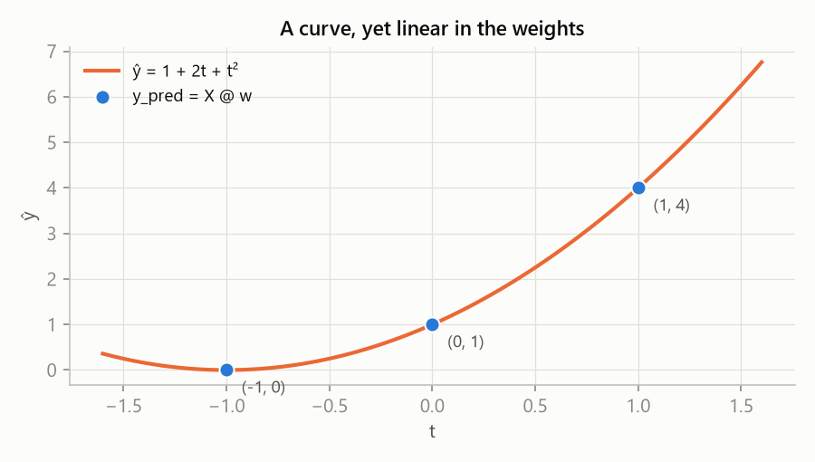
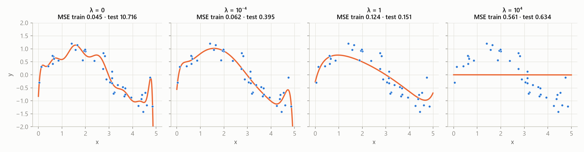
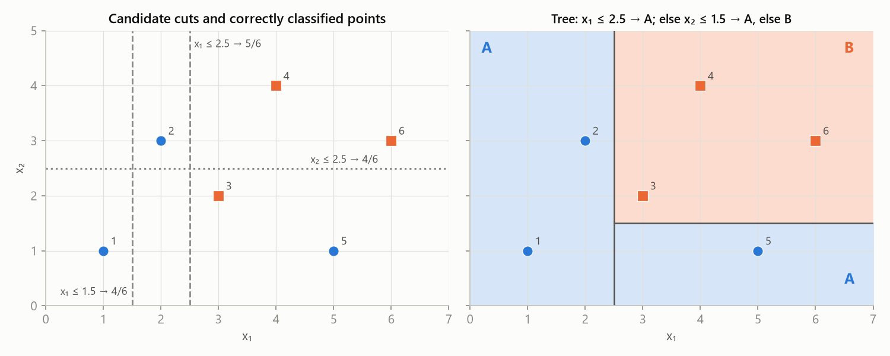

MLR – practical test 1 · All notes – MLR · https://balnerm.github.io/pripravy/mlr/test1/en/skripta_vse.html
MLR – practical test 1
Notes for Practical test 1 (computing) in MPA-MLR: week 8 (3–5 November), at the start of the lab, 5 points. Content of lectures and labs 1–6. The chapters follow task types from sample tests A and B, not lectures; each has the original sample task, similar tasks from the labs and step-by-step solutions.
Test format
- 25 minutes · 5 points · paper only, no notes, AI or calculator. Fractions are fine, show your reasoning.
- 5 independent tasks worth 0.75–1.25 points, in English; short answers are enough.
- Code is read, not run: NumPy, indices from zero.
- Both samples had: one hand calculation with a matrix (linear regression / polynomial features), one code repair (standardization / ridge), one interpretation (plots / confusion matrix), one loop or vote (bagging / forward selection) and one question about agents (skill / subagent).
Map of task types
| Task type | In the samples | In the labs | Chapter |
|---|---|---|---|
| Reading code, shapes, axis | everywhere | 1–6 | 1 |
| k-NN by hand, gradient descent, k-means | – | 1, 2 | 2 |
| Confusion matrix, metrics | B3, A5b | 2 | 3 |
| Standardization, leakage, red flags | A2 | 2, 3 | 4 |
| Filters, forward selection, PCA | B4 | 3 | 5 |
| Linear regression by hand | A1 | 4 | 6 |
| Polynomials, overfitting, ridge, kernels | B1, B2, A4 | 4 | 7 |
| Tree, bagging, bootstrap, SVM | A5 | 6 | 8 |
| Agents: skill, subagent, hook | A3, B5 | 5 | 9 |
How to prepare (1–2 days)
- Samples against the clock: write sample A in 25 minutes on paper, correct it with the solutions. Where you lost points, open the chapter.
- Chapters 1, 6, 7 (code and matrices) – the most points in the test. For each task, solve it yourself first, then open the solution.
- Chapters 3, 4, 5, 8 – short calculations and “find the bug in the code”.
- Chapter 9 – learn the one-sentence definitions of skill / subagent / hook.
- Sample B against the clock, then practice tests C–F.
- The evening before the test: the cheat sheet.
- “Show your reasoning”: write the matrix, the substitution, the fraction with its denominator – not just the result.
- For “explain”, one sentence with because; for code, say the shape and the meaning.
- For a code repair, write the repaired line.
- Simple English is fine; the chapters contain model sentences.
Chapters
The theory of all topics is in the main MLR notes (lectures 1–7, glossary, parameter cheat sheet).
Task type 1
Reading NumPy code
In the test, code is read, not run: “Read code without running it. np is NumPy; indices start at zero.” Almost every task (polynomial features, ridge, tree votes, forward selection) stands on a few lines of NumPy. If you can say the shape of the result and what the axis does from memory, half the points are safe. This chapter is a phrasebook of the idioms from the samples and labs 1–6, plus a method for tracing code on paper.
Array shape and the data convention
The shape (X.shape) is a tuple with the number of elements along each axis. In this course a data matrix always has shape (n_samples, n_features): row = sample, column = feature. A vector (1D array) has shape (n,) – it is neither a row nor a column.
the first number says how many measurements (leaves, patients) there are, the second how many quantities we measure on each. “X has shape (3, 2)” means 3 samples and 2 columns.
The axis argument selects the axis along which a function (sum, mean, argmax …) works; this axis disappears from the result. For a matrix, axis=0 runs over the rows (one result per column) and axis=1 runs over the columns (one result per row).
axis=1 = “compute it in each row separately” – e.g. the mean vote of all trees for one sample. axis=0 = “in each column separately” – e.g. the mean of one feature over all samples (what standardization does).
Matrix (4, 3): mean(axis=1) removes axis 1 (columns) → shape (4,), one number per row. mean(axis=0) removes axis 0 (rows) → shape (3,), one number per column. Just look at which number of the shape disappears.
Idioms that keep coming back
| Code | What it does | Example / result |
|---|---|---|
A * B | element-wise product (same shapes) | [1,2]*[3,4] → [3,8] |
A @ B | matrix product; inner sizes must match | (3,2) @ (2,) → (3,) |
X.T | transpose: (n, d) → (d, n) | X.T @ X has shape (d, d) |
t ** j | element-wise power | t**0 = all ones |
range(3) | numbers 0, 1, 2 (the end is excluded) | range(1, 3) → 1, 2 |
np.column_stack([a, b]) | joins 1D arrays as columns of a matrix | 3 vectors of length 3 → (3, 3) |
np.eye(k) | k × k identity matrix | np.eye(X.shape[1]) = number of columns |
X.shape[0], X.shape[1] | number of rows (samples), columns (features) | (3, 2) → 3, 2 |
X[:, 1], X[1] | column 1 (the second!), row 1 (the second!) | indices from zero |
X[mask] | selects elements where the mask is True | a[a > 2] |
a > 0.5 | element-wise comparison → True/False array | .astype(int) → 1/0 |
np.argmax(s) | position (index) of the largest element; first one on ties | [.8,.9,.85] → 1 |
np.argsort(d) | indices sorted from the smallest value | [3,1,2] → [1,2,0] |
np.unique(v, return_counts=True) | distinct values (sorted) and their counts | k-NN voting |
np.mean(y_true == y_pred) | fraction of matches = accuracy | True = 1, False = 0 |
rng.choice(n, size=n, replace=True) | n indices from 0…n−1 with replacement (bootstrap) | repeats possible |
lst.pop(i) | removes the element at position i and returns it | [1,3,4].pop(1) → 3 |
lst.remove(x) | removes the first element with value x | [1,3,4].remove(3) |
Recognise it by: Write the matrix X, give both resulting lists, explain axis=1, explain the dimensional error.
- Write the shape of every variable (
(3,),(3, 2)…). The shape tells you more than the values. - Go line by line and write the actual values – for small arrays all of them, for big ones only the shape.
- For
@check the inner sizes:(a, b) @ (b, c)→(a, c). If they do not match, it is the “dimensional error”. - For
axissay which axis disappears and what the result therefore means (“one number per sample”). - Watch zero-based indexing: “position 1” is the second element.
Tasks
a = np.array([[1, 2, 3],
[4, 5, 6]])
print(a.shape)
print(a.sum(axis=0))
print(a.mean(axis=1))
print(a[:, 1], a[1])
print(a[a > 2])Write every printed value.
Step-by-step solution
a.shape=(2, 3)– two rows, three columns.sum(axis=0)removes the rows → sum of each column: 1+4, 2+5, 3+6 =[5, 7, 9].mean(axis=1)removes the columns → mean of each row: (1+2+3)/3 = 2, (4+5+6)/3 = 5 →[2., 5.](a mean is always a float).a[:, 1]= all rows, column with index 1 (the second) →[2, 5];a[1]= second row[4, 5, 6].a > 2gives the mask[[F, F, T], [T, T, T]];a[mask]picks values row by row:[3, 4, 5, 6].
* versus @A = np.array([[1, 2], [3, 4]])
B = np.array([[0, 1], [1, 0]])
P = A * B
Q = A @ BWrite P and Q.
Step-by-step solution
1. Element-wise: numbers in the same place are multiplied.
\[ P = \begin{bmatrix} 1\cdot 0 & 2\cdot 1 \\ 3\cdot 1 & 4\cdot 0 \end{bmatrix} = \begin{bmatrix} 0 & 2 \\ 3 & 0 \end{bmatrix} \]2. Matrix product: element (i, j) = row i of A times column j of B.
\[ Q = \begin{bmatrix} 1\cdot 0 + 2\cdot 1 & 1\cdot 1 + 2\cdot 0 \\ 3\cdot 0 + 4\cdot 1 & 3\cdot 1 + 4\cdot 0 \end{bmatrix} = \begin{bmatrix} 2 & 1 \\ 4 & 3 \end{bmatrix} \]X has shape (100, 3) (rows are samples), y has shape (100,), w has shape (3,). Give the shapes of X.T, X.T @ X, X.T @ y, X @ w, X @ X.T and np.eye(X.shape[1]).
Step-by-step solution
X.T: the sizes swap →(3, 100).X.T @ X=(3, 100) @ (100, 3)→(3, 3): its size is the number of features, not samples.X.T @ y=(3, 100) @ (100,)→(3,).X @ w=(100, 3) @ (3,)→(100,): one prediction per sample.X @ X.T=(100, 3) @ (3, 100)→(100, 100)– the matrix of the dual form (one row per sample).np.eye(X.shape[1])=np.eye(3)→(3, 3), matchesX.T @ X.
s = np.array([0.3, 0.9, 0.1, 0.9])
print(np.argmax(s), np.argsort(s))
labels = np.array(["b", "a", "b", "c", "b"])
values, counts = np.unique(labels, return_counts=True)
print(values, counts, values[np.argmax(counts)])Write the printed values.
Step-by-step solution
- The maximum 0.9 is at positions 1 and 3;
argmaxreturns the first →1. argsortsorts the indices by value: 0.1 (index 2), 0.3 (index 0), 0.9 (index 1), 0.9 (index 3) →[2, 0, 1, 3].uniquereturns the sorted distinct values['a', 'b', 'c']and counts[1, 3, 1].argmax(counts)= 1 →values[1]='b'. This is how lab 2 votes in k-NN.
remaining = [1, 3, 4]
selected = [0]
f = remaining.pop(1)
selected.append(f)
print(f, selected, remaining)Write the printed values. Then rewrite the update using remove instead of pop.
Step-by-step solution
pop(1) removes the element at position 1 (value 3) and returns it. remove(3) would remove the element with value 3 – you first have to read it with remaining[1]. A mistake like remaining.remove(1) would remove the value 1, i.e. a completely different feature. This is exactly what task B4 tests (chapter 5).
p = np.array([0.2, 0.5, 0.7, 0.9])
y_hat = (p > 0.5).astype(int)
y_true = np.array([0, 1, 1, 1])
acc = np.mean(y_hat == y_true)Write y_hat and acc.
Step-by-step solution
p > 0.5→[False, False, True, True](strict inequality, 0.5 does not pass).astype(int)→[0, 0, 1, 1].- Matches with
[0, 1, 1, 1]:[T, F, T, T]; mean = 3/4 = 0.75.
rng.choice with and without replacementrng = np.random.default_rng(0)
idx = rng.choice(6, size=6, replace=True) # returned [2, 0, 2, 5, 1, 2]
X_b, y_b = X[idx], y[idx]a) Which rows of X are in the sample, and how many times? b) Which rows are left out? c) What would change with replace=False?
Step-by-step solution
np.unique(idx)=[0, 1, 2, 5]– four distinct rows, row 2 three times.- Left out (out-of-bag): rows 3 and 4.
- With
replace=Falseandsize=6each index is picked exactly once – just a shuffled order, no diversity for bagging. - The same
idxforXandykeeps feature–label pairs together.
- Zero-based indexing: “position 1” is the second element,
X[:, 1]is the second column. *is not the matrix product. Use@for matrices.shape[0]vs.shape[1]: rows (samples) vs. columns (features). Ridge needsnp.eye(X.shape[1]).argmaxreturns a position, not a value – and the position in the list it was called on.- Strict inequality:
> 0.5for exactly 0.5 givesFalse(a tie with an even number of voters). - A mean is a float:
meanreturns2., not2.
Always give the shape and the meaning: “axis=1 averages across the columns (trees) of each row, so the result has one value per sample, shape (4,).” Write the whole matrix, not just a few entries; for lists give both resulting values.
Row = sample, column = feature; axis is the axis that disappears; @ multiplies matrices, * elements; argmax gives a position.
Summary
A data matrix has shape (n_samples, n_features). Functions with axis work along the chosen axis and that axis disappears from the result: axis=0 gives a value per column, axis=1 a value per row. The matrix product @ needs matching inner sizes, * multiplies element-wise. argmax and argsort return indices, np.unique(..., return_counts=True) is used for voting, rng.choice(..., replace=True) for bootstrap. When tracing code, write the shape and the values of every variable.
Take-home messages
- Write the shape of every variable before computing values.
axis= the axis that disappears from the result.(a, b) @ (b, c)→(a, c);X.T @ Xhas the size of the number of features.argmax= position (first on ties), not the value or the original feature number.- Indices start at zero,
range(3)= 0, 1, 2.
Test questions
The vote matrix V has shape (4, 3) – rows are samples, columns are trees. What shape does V.mean(axis=1) have and what does it mean?
Shape (4,): for each sample the mean vote of the three trees, i.e. the fraction of trees voting for class 1.
Why is X.T @ X a small matrix even for a million samples?
Its shape is (d, d), where d is the number of columns (features). The number of samples is “summed out” in the inner dimension.
What does np.argmax([0.7, 0.9, 0.9]) return and why?
1 – the position of the first maximum. On ties the first occurrence wins.
What is the difference between lst.pop(1) and lst.remove(1)?
pop(1) removes the element at position 1 and returns it; remove(1) removes the first element with value 1 and returns nothing.
What does np.column_stack([np.ones(3), x]) do for x = [1, 2, 3]?
It builds a (3, 2) matrix with a column of ones and a column x: rows [1, 1], [1, 2], [1, 3] – the design matrix of a line with an intercept.
When is (a > 0.5).astype(int) equal to 1 and when 0?
1 only for values strictly greater than 0.5; exactly 0.5 gives 0.
Task type 2
Distances, k-NN and gradient descent
The first two labs computed the nearest neighbour on paper first, then in NumPy. On paper you work with the squared distance \(d^2\) – the square root does not change the order, so whole numbers are enough. Add one gradient-descent step and k-means from lecture 1: short calculations that work without a calculator.
Nearest neighbour and k-NN
The Euclidean distance between two samples \(\mathbf a, \mathbf b\) with d features is the length of the segment between them: \[ d(\mathbf a, \mathbf b) = \sqrt{\sum_{j=1}^{d} (a_j - b_j)^2} \]
“distance with a ruler”. Squared differences of all features are added – that is why a feature with large numbers (centimetres vs. tenths of a centimetre) dominates the distance and why we standardize before k-NN (chapter 4).
k-NN (k nearest neighbours) assigns a new sample to the class that has the majority among its k nearest training samples. For k = 1 it is the nearest-neighbour rule \(\hat y(\mathbf x_\ast) = y_{(1)}\). There is no training phase: fit only stores the data (“lazy learner”).
“tell me who your neighbours are”. Small k = sensitive to one stray point (noise), large k = blurred class borders. k is a hyperparameter – it is chosen on validation data.
- For every training point compute \(d^2 = (x_1 - x_{1\ast})^2 + (x_2 - x_{2\ast})^2\) – no square root.
- Assign ranks: 1 = nearest.
- Take the k smallest and count the votes per class. The majority wins.
- Write how the prediction changes with k and mention ties (even k, equal distances).
Training points: A at (2, 3), (1, 1), (0, 0); B at (4, 4), (5, 3), (3, 6). Classify the new point (3, 3) with 1-NN, 3-NN and 5-NN. Use squared Euclidean distance.
Step-by-step solution
| point | class | \(d^2\) to (3, 3) | rank |
|---|---|---|---|
| (2, 3) | A | 1 + 0 = 1 | 1 |
| (4, 4) | B | 1 + 1 = 2 | 2 |
| (5, 3) | B | 4 + 0 = 4 | 3 |
| (1, 1) | A | 4 + 4 = 8 | 4 |
| (3, 6) | B | 0 + 9 = 9 | 5 |
| (0, 0) | A | 9 + 9 = 18 | 6 |
- k = 1: the nearest is (2, 3) → A.
- k = 3: A, B, B → B (2 : 1).
- k = 5: A, B, B, A, B → B (3 : 2).
The single close A point is outvoted by B neighbours as soon as k grows – the same effect as the large cherry among walnuts in lab 2.
distances = np.array([2.0, 0.5, 1.5, 0.7, 3.0])
labels = np.array(["cherry", "maple", "walnut", "walnut", "maple"])
order = np.argsort(distances)
nearest = labels[order[:3]]
values, counts = np.unique(nearest, return_counts=True)
prediction = values[np.argmax(counts)]Write order, nearest, values, counts and prediction.
Step-by-step solution
- Distances in ascending order: 0.5 (index 1), 0.7 (3), 1.5 (2), 2.0 (0), 3.0 (4) →
order = [1, 3, 2, 0, 4]. order[:3]=[1, 3, 2]→ labels maple, walnut, walnut.unique(alphabetical): maple 1×, walnut 2× →argmax(counts)= 1 → walnut.
A 1-NN model is fitted on all 518 leaves and evaluated with accuracy_score(y, model.predict(X)) on the same rows. It reports 0.99. Why is this number useless? How do you fix it?
Step-by-step solution
In 1-NN each training sample is its own nearest neighbour, so predictions on the training data are almost always correct (wrong only where two identical measurements have different labels). The number says nothing about new data. Fix: split the data (e.g. 70/30, stratify=y), fit on the training part only, measure accuracy on the test part. In the lab the honest value was about 0.92 instead of 0.99.
Gradient descent
Gradient descent looks for a minimum of a function by repeating a step against the gradient: \[ \mathbf x^{(t+1)} = \mathbf x^{(t)} - \eta\, \nabla f(\mathbf x^{(t)}) \] where \(\eta > 0\) is the learning rate (step size) and the gradient \(\nabla f\) is the vector of partial derivatives.
the gradient points uphill, so we go the other way. Small η = slow creeping, too large η = overshooting the minimum and oscillation or divergence.
Minimize \(f(w) = (w - 3)^2\) by gradient descent from \(w_0 = 0\). a) Write the update rule. b) Compute \(w_1, w_2\) for \(\eta = 0.25\). c) What happens for \(\eta = 1\) and \(\eta = 1.25\)?
Step-by-step solution
1. Derivative and rule:
\[ \begin{aligned} f'(w) &= 2(w - 3) \\ w_{t+1} &= w_t - 2\eta\,(w_t - 3) \end{aligned} \]2. η = 0.25:
\[ \begin{aligned} w_1 &= 0 - 0.25\cdot(-6) = 1.5 \\ w_2 &= 1.5 - 0.25\cdot(-3) = 2.25 \end{aligned} \]3. The distance from the minimum \(e_t = w_t - 3\) is multiplied by \((1 - 2\eta)\): for η = 0.25 it is 0.5 (converges), for η = 1 it is −1 (oscillates between 0 and 6), for η = 1.25 it is −1.5 (each step 50 % further – diverges). It converges exactly when \(|1 - 2\eta| < 1\), i.e. \(0 < \eta < 1\).
\(f(\mathbf x) = \tfrac12(x_1^2 + 5x_2^2)\). Compute the gradient and one step from \(\mathbf x = (2, 1)\) with \(\eta = 0.1\).
Step-by-step solution
The point moved more in the steep direction \(x_2\). If η were larger than 2/5, the descent would diverge in the \(x_2\) direction (the lecture condition \(\eta < 2/L\), here L = 5).
k-means: one step
k-means alternates two steps: (1) assignment – every point belongs to the nearest centre \(\boldsymbol\mu_j\); (2) update – every centre becomes the mean of its points. It stops when the assignment no longer changes.
points pick the nearest “flag”, each flag moves to the middle of its points, and again. Unsupervised – labels are not used.
Points 1, 2, 4, 8, 9; k = 2; initial means \(\mu_1 = 1\), \(\mu_2 = 4\). Run k-means until it stops.
Step-by-step solution
- Assign to (1, 4): 1 → μ₁, 2 → μ₁ (distances 1 and 2), 4, 8, 9 → μ₂.
- Update: μ₁ = (1 + 2)/2 = 1.5; μ₂ = (4 + 8 + 9)/3 = 7.
- Assign to (1.5, 7): point 4 has distances 2.5 and 3 → moves to μ₁.
- Update: μ₁ = (1 + 2 + 4)/3 = 7/3; μ₂ = (8 + 9)/2 = 8.5.
- The assignment does not change any more → stop.
- Do not take the square root when comparing distances – the order of \(d\) and \(d^2\) is the same.
- Ties: with even k or equal distances, say how you break them (each implementation does it differently).
- Gradient descent goes minus the gradient; the sign is the most common mistake.
- k-NN needs scaled features – otherwise the feature with the largest numbers decides.
A table of \(d^2\) with ranks, clearly marked votes and the result for each k. For descent: the formula, the substitution and the values step by step.
With k = 1 the nearest point (distance² = 1) is class A, so we predict A. With k = 3 the votes are A, B, B, so the majority is B.
k-NN: compute \(d^2\), sort, let the k nearest vote. Gradient descent: \(w \leftarrow w - \eta f'(w)\); the size of η decides between creeping, fast convergence and divergence.
Summary
On paper k-NN is computed with squared distances and the ranking of neighbours; the prediction is the majority of the k nearest. In code this is np.argsort and np.unique(..., return_counts=True). The training accuracy of 1-NN is worthless because every point is its own neighbour. Gradient descent moves the parameter against the derivative by a step η; for a quadratic function the error is multiplied by \(1 - 2\eta\) every step, which shows convergence, oscillation and divergence clearly. k-means alternates assignment to the nearest centre and recomputing the centres.
Take-home messages
- Compare \(d^2\); the square root does not change the order.
- The k-NN prediction can change as k grows – always write the votes.
- Training accuracy of 1-NN ≈ 100 % and means nothing.
- \(w_{t+1} = w_t - \eta \nabla f(w_t)\); a too large η diverges.
- k-means: assign → recompute means → repeat until nothing changes.
Test questions
Why is comparing \(d^2\) instead of \(d\) enough?
The square root is an increasing function, so the order of distances does not change and the nearest neighbour stays the same.
What does fit do in k-NN?
It only stores the training data and labels. All the work (distances, voting) happens in predict.
How does k-NN change as k grows?
Small k follows individual points (noise, overfitting), large k smooths the border and for k = n always predicts the majority class (underfitting).
Write the gradient descent step and explain the role of η.
\(\mathbf w \leftarrow \mathbf w - \eta \nabla f(\mathbf w)\). η sets the step length: small = slow convergence, large = overshooting, oscillation or divergence.
When does gradient descent stop?
When the gradient is small, the change of the parameters or of the function value is small, after a maximum number of iterations, or (when training) when the validation error stops decreasing. A small gradient only means a stationary point.
How do k-NN and k-means differ?
k-NN is a supervised classifier (it uses the neighbours' labels), k is the number of neighbours. k-means is unsupervised clustering, k is the number of clusters and no labels are used.
Task type 3
Confusion matrix and metrics
Task B3 gives a confusion matrix and asks for the number of errors, accuracy, recall with denominators and an explanation of recall in words in the context (“faulty items”). Lab 2 did the same for maples (TP 15, FN 5, FP 10, TN 70) and from label vectors in NumPy. Points are lost mainly by swapping rows and columns or by missing the meaning in words.
Confusion matrix
A confusion matrix is a table of counts where rows are the actual classes and columns the predicted classes (as in the lecture and in sklearn.metrics.confusion_matrix). For a binary task with positive class 1 it contains the counts TN, FP (actually 0) and FN, TP (actually 1).
correct answers are on the diagonal, errors off it. FN = “we missed a positive”, FP = “false alarm”. Always read first what the rows and columns are – the task may flip it.
| predicted 0 | predicted 1 | |
|---|---|---|
| actual 0 | TN | FP |
| actual 1 | FN | TP |
Recall of the positive class is the fraction of truly positive samples that the model correctly labels as positive: \[ \text{recall} = \frac{TP}{TP + FN} \]
“how many of the truly faulty items did we find”. The denominator is the row of actual positives. High recall = few missed.
Precision is the fraction of samples labelled positive that really are positive: \[ \text{precision} = \frac{TP}{TP + FP} \]
“when the alarm rings, how often is it true”. The denominator is the column of predicted positives.
Specificity is the recall of the negative class, the fraction of truly negative samples labelled negative: \(TN/(TN + FP)\).
how many good items we correctly let through.
| TP | actually 1, predicted 1 (correct alarm) |
| TN | actually 0, predicted 0 |
| FP | actually 0, predicted 1 (false alarm) |
| FN | actually 1, predicted 0 (missed) |
Recognise it by: rows are actual labels, treat class 1 as positive, how many … were missed, incorrectly flagged, show the denominators.
- Read the orientation (rows = actual?) and which class is positive.
- Write TP, TN, FP, FN with their meaning in context (“missed faulty items = FN”).
- Write the metric as a fraction with its denominator, then the value.
- In words: “Out of all actually faulty items, the model detected …”.
Tasks
Class 1 means a faulty item; class 0 means a good item. Rows are actual labels and columns are predicted labels:
| Predicted 0 | Predicted 1 | |
|---|---|---|
| Actual 0 | 6 | 2 |
| Actual 1 | 1 | 3 |
For recall, treat class 1 as positive (TP: true positives, FN: false negatives): \(\text{recall}_1 = \frac{TP}{TP + FN}\).
a) How many faulty items were missed? How many good items were incorrectly flagged as faulty? (0.25)
b) Calculate accuracy and recall for class 1. Show the denominators. (0.5)
c) Explain recall for class 1 in words in this application. (0.25)
Step-by-step solution
1. Reading the matrix: TN = 6, FP = 2, FN = 1, TP = 3, 12 items in total.
a) Missed faulty items = actually 1, predicted 0 = FN = 1. Good items flagged as faulty = actually 0, predicted 1 = FP = 2.
b) Accuracy and recall:
\[ \begin{aligned} \text{accuracy} &= \frac{TP + TN}{12} = \frac{3 + 6}{12} = \frac{9}{12} = 0.75 \\ \text{recall}_1 &= \frac{TP}{TP + FN} = \frac{3}{3 + 1} = \frac34 = 0.75 \end{aligned} \]c) Recall for class 1 is the fraction of truly faulty items that the model flags as faulty: 3 of the 4 faulty items were detected, 1 was missed.
100 leaves, positive class = maple (20 real maples). TP = 15, FN = 5, FP = 10, TN = 70. Compute accuracy, sensitivity, specificity, precision, F1 and balanced accuracy. Then compute accuracy and balanced accuracy of the constant classifiers “always maple” and “never maple”.
Step-by-step solution
“Always maple”: TP = 20, FP = 80 → accuracy 0.2, sensitivity 1, specificity 0 → balanced 0.5. “Never maple”: TN = 80, FN = 20 → accuracy 0.8 (looks good!), sensitivity 0, specificity 1 → balanced 0.5. Balanced accuracy reveals that a constant model knows nothing.
labels = np.array([0, 1, 1, 1, 0, 0, 1, 1, 1, 1])
preds = np.array([0, 0, 1, 1, 0, 1, 1, 1, 1, 0])
TP = np.sum((labels == 1) & (preds == 1))
FN = np.sum((labels == 1) & (preds == 0))
FP = np.sum((labels == 0) & (preds == 1))
TN = np.sum((labels == 0) & (preds == 0))
sensitivity = TP / (TP + FN)Give the four counts and the sensitivity. What does & do here?
Step-by-step solution
Go through the pairs (label, pred): (0,0) TN, (1,0) FN, (1,1) TP, (1,1) TP, (0,0) TN, (0,1) FP, (1,1) TP, (1,1) TP, (1,1) TP, (1,0) FN. Totals: TP 5, FN 2, FP 1, TN 2 (10 in all). & is an element-wise logical AND of two boolean arrays; np.sum counts the True values. Sensitivity = 5/(5 + 2) = 5/7 ≈ 0.71.
Disease screening, class 1 = ill. Rows are predicted labels and columns are actual labels:
| Actual 0 | Actual 1 | |
|---|---|---|
| Predicted 0 | 40 | 5 |
| Predicted 1 | 10 | 45 |
Compute recall and precision for class 1.
Step-by-step solution
FN = predicted 0, actually 1 = 5 (row Predicted 0, column Actual 1). FP = predicted 1, actually 0 = 10.
\[ \begin{aligned} \text{recall} &= \frac{45}{45 + 5} = \frac{45}{50} = 0.9 \\ \text{precision} &= \frac{45}{45 + 10} = \frac{9}{11} \approx 0.82 \end{aligned} \]True values \(y = [2, 4, 6]\), predictions \(\hat y = [3, 4, 4]\). Compute MSE and MAE. Which is more sensitive to one large error?
Step-by-step solution
Errors \(\hat y - y = [1, 0, -2]\).
\[ \begin{aligned} \text{MSE} &= \frac{1^2 + 0^2 + (-2)^2}{3} = \frac53 \\ \text{MAE} &= \frac{1 + 0 + 2}{3} = 1 \end{aligned} \]MSE is in squared units and one large error (2 → 4) weighs more.
A dataset contains 95 % maples. A 3-NN model reports test accuracy 0.95. What would you check before believing it?
Step-by-step solution
The constant model “always maple” (DummyClassifier(strategy="most_frequent")) has accuracy 0.95 and does not find a single non-maple. Compare with this baseline and report recall of both classes, balanced accuracy or macro F1, and the confusion matrix.
- Orientation: in the course rows = actual; when the task says the opposite, rewrite TP/FP/FN/TN before computing.
- Recall vs. precision: recall divides by the row of actual positives (TP + FN), precision by the column of predicted positives (TP + FP).
- Explain in context: “faulty items”, not “positives”.
- Accuracy on imbalanced data lies – compare with the majority baseline.
- In
sklearnbinary metrics depend onpos_label;recall_score(..., pos_label=0)= specificity.
List the four numbers with their meaning, the formula, the substituted fraction and the result. In the verbal part use the domain of the task.
FN = 1 faulty item was missed; FP = 2 good items were wrongly flagged. Accuracy = (3 + 6)/12 = 0.75. Recall₁ = 3/(3 + 1) = 0.75.
Row = actual, column = predicted; recall = TP/(TP + FN) “how many positives we found”, precision = TP/(TP + FP) “how many alarms are real”.
Summary
A confusion matrix summarises binary classification in four numbers TP, TN, FP, FN. Accuracy is the fraction correct, recall (sensitivity) the fraction of positives found, specificity the fraction of negatives correctly recognised, precision the fraction of true alarms, and F1 their harmonic mean. On imbalanced data accuracy is misleading; compare with the majority baseline and report balanced accuracy. For regression we use MSE (squares, sensitive to large errors) and MAE (absolute values).
Take-home messages
- First the matrix orientation and the positive class.
- FN = missed positives, FP = false alarm.
- Recall divides by actual positives, precision by predicted positives.
- Always show the denominator.
- Accuracy 0.95 means nothing if the majority class has 95 %.
Test questions
What does FN mean in the application “class 1 = faulty item”?
A faulty item the model labelled as good – a missed defect.
What is the difference between recall and precision?
Recall: of the items that are actually positive, how many we flagged (TP/(TP + FN)). Precision: of the items we flagged, how many are actually positive (TP/(TP + FP)).
When do you prefer high recall?
When a miss is expensive: faulty parts, a disease in screening. Better more false alarms than a missed defect.
Why is the balanced accuracy of a constant classifier 0.5?
One class has recall 1, the other 0; the mean is 0.5 whatever the class ratio.
How do you count TP from vectors y and p in NumPy?
np.sum((y == 1) & (p == 1)) – AND of two masks and the number of True values.
Why does MSE have different units than MAE?
MSE averages squared errors (cm²), MAE absolute values (cm).
Task type 4
Preprocessing and data leakage
Task A2 (“Repair preprocessing”) is a typical red flag: the code runs and returns a number, but it is wrong. Lab 2 had four such snippets (A–D) and lab 3 filled missing values. They all share one rule: everything learned from data (μ, σ, min, max, the fill value, a hyperparameter) is learned from the training part only; validation is for choosing, the test set is used once at the end.
Terms
Standardization rescales each feature to zero mean and unit standard deviation using the mean and standard deviation of the training data: \[ x' = \frac{x - \mu_{\text{train}}}{\sigma_{\text{train}}} \]
“how many standard deviations the value is above the training mean”. After standardization all features have a comparable scale, so in a distance (k-NN) the feature with large numbers does not dominate.
Min-max normalization maps a feature linearly to [0, 1] using the minimum and maximum of the training data: \(x' = (x - \min_{\text{train}})/(\max_{\text{train}} - \min_{\text{train}})\).
new data may fall outside [0, 1] – that is fine, you never refit because of it.
Data leakage happens when information from the data the model is evaluated on (validation or test) gets into training or model selection, so the performance estimate is too optimistic.
the model “saw the answer sheet”. The number then does not match what the model will do on truly new data.
The training set is used to learn model parameters and preprocessing, the validation set to choose hyperparameters, features and the model, the test set for one final estimate of performance on new data.
“fit the model | choose the hyperparameters | report once”. Typical splits 60/20/20 or 70/15/15; with little data, cross-validation on the training part.
scaler = StandardScaler()
X_train = scaler.fit_transform(train) # learn μ, σ from train and apply them
X_valid = scaler.transform(valid) # only apply the stored μ, σ
X_test = scaler.transform(test)fit | computes and stores the parameters (mean_, scale_) from the data it gets |
transform | applies the stored parameters, learns nothing new |
fit_transform | both at once – training data only |

fit_transform, they become −1 and 1, so the value 8 looks below average.The validation set's own μ and σ shift the validation points relative to the training points. For k-NN this changes who is whose neighbour – the model gets a different coordinate system than the one it learned in.
Recognise it by: fit_transform(valid), a scaler on the whole data before train_test_split, choosing k / λ / features by the test set, accuracy on training data, fillna with a mean of all data.
- Find every place where something is learned (
fit,mean(),max(scores),argmax). - Ask from which data it is learned. It must be the training part only (hyperparameter choice: validation).
- Explain the consequence: optimistic estimate, or inconsistent scaling.
- Write the repair (
transforminstead offit_transform, split before scaling, choose on validation…).
Tasks
Training and validation rows have already been split correctly. A k-NN model will use these transformed features:
scaler = StandardScaler()
X_train = scaler.fit_transform(train)
X_valid = scaler.fit_transform(valid)a) Explain why the original code is wrong for distance-based prediction. Which data must determine the mean and standard deviation? (0.75)
b) The training mean is 1 and standard deviation is 1. Standardize a validation value of 4. (0.25)
Step-by-step solution
a) fit_transform(valid) recomputes μ and σ from the validation data and overwrites the training ones. Validation points are then scaled differently from training points, so the k-NN distances between a validation point and training points do not reflect reality and the neighbours change. In addition something is learned from validation data (leakage). The parameters must come from training data only; the repair:
X_train = scaler.fit_transform(train)
X_valid = scaler.transform(valid)b) Substitute the training parameters:
\[ z = \frac{x - \mu_{\text{train}}}{\sigma_{\text{train}}} = \frac{4 - 1}{1} = 3 \]Training values of one feature: 2, 4, 4, 4, 5, 5, 7, 9. a) Compute μ and σ (population, as in StandardScaler). b) Standardize validation values 9 and 3. c) Min-max scale the value 8 using training min 2 and max 10, and the value 12.
Step-by-step solution
1. Mean and variance:
\[ \begin{aligned} \mu &= \frac{2 + 4 + 4 + 4 + 5 + 5 + 7 + 9}{8} = \frac{40}{8} = 5 \\ \sigma^2 &= \frac{9 + 1 + 1 + 1 + 0 + 0 + 4 + 16}{8} = \frac{32}{8} = 4 \end{aligned} \]so σ = 2.
2. \(z(9) = (9 - 5)/2 = 2\), \(z(3) = (3 - 5)/2 = -1\).
3. Min-max: \((8 - 2)/(10 - 2) = 0.75\); \((12 - 2)/8 = 1.25\) – outside [0, 1], but correct.
scaler = MinMaxScaler()
X_scaled = scaler.fit_transform(X)
X_train, X_test, y_train, y_test = train_test_split(X_scaled, y, train_size=20)
model = KNeighborsClassifier(n_neighbors=3).fit(X_train, y_train)
print(accuracy_score(y_test, model.predict(X_test)))What is wrong? Repair it.
Step-by-step solution
The scaler knows the range of all data including the test set, so the scaling “knows” where the test points lie. Especially with 20 training samples, the range from the training part differs from the range of all data. Repair:
X_train, X_test, y_train, y_test = train_test_split(X, y, train_size=20)
scaler = MinMaxScaler().fit(X_train)
X_train, X_test = scaler.transform(X_train), scaler.transform(X_test)scores = []
for k in range(1, 32, 2):
model = KNeighborsClassifier(n_neighbors=k).fit(X_train_s, y_train)
scores.append(accuracy_score(y_test, model.predict(X_test_s)))
print("best accuracy:", max(scores))The scaler was fitted on training data only. Why is the printed number still not an estimate of performance on new data?
Step-by-step solution
The maximum over many tries on the test set is optimistically biased: we picked the k that happened to work best on these test data. Correct: split a validation part from the training data (or use cross-validation), choose k by validation, evaluate the model with the chosen k once on the test set.
fill = pd.concat([train, valid, test])["age"].mean()
train["age"] = train["age"].fillna(fill)
valid["age"] = valid["age"].fillna(fill)a) What is wrong? b) Training ages are 20, NaN, 40; validation ages are NaN, 60. Which value replaces the missing validation age?
Step-by-step solution
The fill value is a learned parameter, just like μ in standardization. It is computed from the training part (the mean ignores NaN): (20 + 40)/2 = 30. The same number 30 is then used for validation and test. In lab 3: fill_values from train, then fillna(fill_values) on all three parts.
You have 500 samples and want a 60/20/20 split. How many samples are in each part, and what is each part used for? Why not report the validation score as the final result?
Step-by-step solution
300 training (fit the model, scaler, imputation), 100 validation (choose k, λ, degree, features), 100 test (one final measurement). The validation score of the best variant is optimistic because we selected by it – that is why an independent test set is needed.
fit_transformon validation/test – the most common mistake in the samples.- Scaling before splitting the data.
- Choosing a hyperparameter by the test set (and then reporting the same test).
- Training accuracy as the result (for 1-NN almost always 1).
- In CV the scaler must be inside a
Pipelineso it is refitted in every fold. - Trees and random forests do not need scaling (cuts on one feature); k-NN, SVM, ridge do.
Three parts: (1) what is learned from which data, (2) why it is wrong for the given method (distances, optimism), (3) the repaired line of code. For a calculation, the formula with training parameters.
Learned preprocessing (mean, standard deviation, min, max, fill values) must be fitted on the training data only and then applied with transform to validation and test data.
Fit on train only, transform everywhere; hyperparameters by validation; test once.
Summary
Preprocessing that learns from data (standardization, min-max, filling missing values) is part of the model: its parameters are estimated from the training part only and merely applied to validation and test data (transform). For distance-based methods this matters twice – different scaling of validation changes the neighbours. Leakage also comes from choosing hyperparameters by the test set or reporting the training error. The validation part is for decisions, the test part for one final number.
Take-home messages
- \(x' = (x - \mu_{\text{train}})/\sigma_{\text{train}}\).
fit_transform(train),transform(valid),transform(test).- Split before scaling; in CV the scaler goes inside the pipeline.
- k, λ, degree, features – by validation, never by test.
- Training accuracy is not a performance estimate.
Test questions
Why does k-NN need standardization and a tree does not?
k-NN adds squared differences of all features; a feature with a large range dominates the distance. A tree splits one feature by a threshold – rescaling only moves the threshold.
What is the difference between fit_transform and transform?
fit_transform computes the parameters and applies them, transform only applies the stored ones. Validation and test data get only transform.
What is data leakage? Give two examples.
Information from the evaluation data gets into learning. E.g. a scaler on all data before the split; choosing k by test accuracy; filling with the mean of all data.
What are the validation and the test set for?
Validation: choose hyperparameters, features and the model. Test: estimate the performance of the chosen model once at the end.
Why can a validation value after min-max be 1.25?
Min and max come from the training data; a new value can lie outside their range. That is correct, nothing is recomputed.
How do you scale correctly in cross-validation?
Put the scaler and the model into a Pipeline and pass it to cross_val_score; the scaler is refitted in each training fold.
Task type 5
Feature selection and PCA
Task B4 (“Select a feature, not a list position”) tests forward selection in code: argmax returns the position in the list remaining, not the feature number, and a new feature is accepted only on a strict improvement. Lab 3 also computed correlation, entropy and mutual information by hand on a table of four students, and PCA on four points. All of these are short calculations without a calculator.
Filters: a score for one feature without a model
A filter scores each feature on its own with a statistic against the label (correlation, mutual information) without training a model. A wrapper scores subsets of features by the performance of a trained model on validation data (forward selection, backward elimination).
a filter is fast and coarse (it knows nothing about the model or redundancy), a wrapper is slower but measures exactly what we care about – how well the model predicts with the given columns.
| \(\bar x, \bar y\) | means of the feature and the label |
| \(p(x)\) | relative frequency of value x; terms with \(p = 0\) are skipped |
| \(H(X, Y)\) | entropy of the pairs (x, y) – joint entropy |
| \(I(X; Y)\) | how many bits about the label the feature reveals; 0 = independent |
| # | effort | brno | passed |
|---|---|---|---|
| 1 | 0 | 0 | 0 |
| 2 | 0 | 1 | 0 |
| 3 | 1 | 0 | 1 |
| 4 | 1 | 1 | 1 |
Compute ρ(effort, passed), H(passed), I(effort; passed) and I(brno; passed). Use \(\log_2(1/2) = -1\), \(\log_2(1/4) = -2\).
Step-by-step solution
1. Correlation: both means are 0.5; the deviations of effort and passed are both \([-\tfrac12, -\tfrac12, \tfrac12, \tfrac12]\).
\[ \rho = \frac{4\cdot\tfrac14}{\sqrt{1\cdot 1}} = 1 \]2. Label entropy: two zeros, two ones.
\[ H(\text{passed}) = -\left(\tfrac12\cdot(-1) + \tfrac12\cdot(-1)\right) = 1 \text{ bit} \]3. Effort: pairs (0,0), (0,0), (1,1), (1,1) → two values with 1/2 each → \(H(\text{effort}, \text{passed}) = 1\).
\[ I = 1 + 1 - 1 = 1 \text{ bit} \]4. Brno: pairs (0,0), (1,0), (0,1), (1,1) → four values with 1/4 each → \(H = -4\cdot\tfrac14\cdot(-2) = 2\).
\[ I = 1 + 1 - 2 = 0 \]Effort determines the result completely, Brno says nothing about it.
\(x = [1, 2, 3]\), \(y = [1, 3, 2]\). Compute the Pearson correlation.
Step-by-step solution
Means 2 and 2; deviations \(x - \bar x = [-1, 0, 1]\), \(y - \bar y = [-1, 1, 0]\).
\[ \rho = \frac{(-1)(-1) + 0\cdot 1 + 1\cdot 0}{\sqrt{2\cdot 2}} = \frac12 \]Forward selection (wrapper)
Forward selection starts with an empty (or given) set of features; in each step it tries adding every remaining feature, measures the validation score and adds the best one – only if the score increases; otherwise it stops. It is a greedy algorithm and does not guarantee the best subset.
building a team one player at a time: always take the player with whom the team plays best, and stop when nobody helps any more. Backward elimination goes the other way – it starts with all and removes.
best_position = argmax(scores)= position inremaining(from zero; first on ties).- Feature number =
remaining[best_position]. - Compare
scores[best_position]withbest_score: accept only if strictly greater. - Update:
feature = remaining.pop(best_position),selected.append(feature),best_score = scores[best_position]. - Write both resulting lists.
Each score is the validation accuracy obtained by adding the corresponding feature in remaining to the already selected set.
selected = [0]
remaining = [1, 3, 4]
best_score = 0.75
scores = [0.80, 0.90, 0.85]
best_position = int(np.argmax(scores))
# update selected and remaining hereThe search accepts a new feature only if validation accuracy strictly improves.
a) Give best_position and the original feature number to add. Explain the distinction. (0.25)
b) Replace the comment with an update that adds the correct feature and removes it from remaining. Give both resulting lists. Python or clear pseudocode is acceptable. (0.5)
c) After accepting this step and updating best_score, the best candidate in the next step again scores 0.90. Should the search accept it? Explain. (0.25)
Step-by-step solution
a) The highest score 0.90 is at index 1 of scores → best_position = 1. The scores correspond to the elements of remaining in the same order, so the feature to add is remaining[1] = 3. The position says where the candidate sits in the list, the feature number which data column it is.
b) Update (0.90 > 0.75, so it is accepted):
if scores[best_position] > best_score:
feature = remaining.pop(best_position) # 3
selected.append(feature)
best_score = scores[best_position] # 0.90Result: selected = [0, 3], remaining = [1, 4].
c) No. The condition is a strict improvement: 0.90 is not greater than best_score = 0.90. Another feature brings nothing; the search ends with [0, 3] (a simpler model with the same score).
best_position = 1 is the index in remaining; the feature to add is remaining[1] = 3. Using selected.append(best_position) would add the wrong column (feature 1).
Baseline without features: 50 %. Validation accuracies: A 70 %, B 60 %, C 50 %; {A, B} 80 %, {A, C} 70 %; {A, B, C} 80 %. Which feature comes first, which next, and when do we stop?
Step-by-step solution
- Step 1: candidates A 70, B 60, C 50; the best is A, 70 > 50 → add A.
- Step 2: {A, B} 80, {A, C} 70; the best is B, 80 > 70 → add B.
- Step 3: {A, B, C} 80, not strictly greater than 80 → stop.
selected = [2]
remaining = [0, 1, 4, 5]
best_score = 0.70
scores = [0.72, 0.68, 0.75, 0.75]
best_position = int(np.argmax(scores))Give best_position, the feature added and both lists after the update. In the next step the scores are [0.74, 0.75, 0.73]. What happens?
Step-by-step solution
On ties argmax returns the first occurrence → position 2 → remaining[2] = 4. After pop(2): remaining = [0, 1, 5], selected = [2, 4], best_score = 0.75. Next step: the best 0.75 (feature 1) is not strictly better → stop.
Write the forward-selection loop with a helper knn_accuracy(columns) that returns validation accuracy.
Solution
selected, remaining = [], list(range(n_features))
best_score = baseline
while remaining:
scores = [knn_accuracy(selected + [j]) for j in remaining]
pos = int(np.argmax(scores))
if scores[pos] <= best_score: # no strict improvement
break
best_score = scores[pos]
selected.append(remaining.pop(pos))The score is computed on the validation part; the test set is used once for the selected subset.
PCA on four points
PCA creates new features as projections of centred data onto the eigenvectors of the covariance matrix \(S = \tfrac1n X_c^\top X_c\); the first component has the direction with the largest eigenvalue (largest variance). The fraction of variance kept is \(\lambda_1/\sum_j \lambda_j\).
PCA does not select features but builds new ones and does not use labels – keeping a lot of variance does not mean the information important for classification survived.
\(X\) has rows (2, 1), (−2, −1), (1, 2), (−1, −2). Compute the covariance \(S = \frac1n X_c^\top X_c\), its eigenvalues, the first direction, the projections and the fraction of variance kept by one component.
Step-by-step solution
1. Both column means are 0, the data are already centred.
2. Covariance:
\[ X^\top X = \begin{bmatrix} 10 & 8 \\ 8 & 10 \end{bmatrix},\qquad S = \frac14 X^\top X = \begin{bmatrix} 2.5 & 2 \\ 2 & 2.5 \end{bmatrix} \]3. The eigenvalues of \(\begin{bmatrix} a & b \\ b & a \end{bmatrix}\) are \(a \pm b\): 4.5 (direction (1, 1)) and 0.5 (direction (1, −1)).
4. Projection onto \(\mathbf w_1 = (1, 1)/\sqrt 2\): \(z = (3, -3, 3, -3)/\sqrt2\).
5. Variance kept 4.5/5 = 0.9.
selected.append(best_position)adds the wrong column – it must beremaining[best_position].remaining.remove(best_position)removes a value, not a position.- “Strictly improves”: equality is not enough.
- Features are selected on validation, not on test.
- A filter does not see redundancy – two identical good features get the same score.
Distinguish “position in remaining” and “feature number”, write both lists after the update and justify stopping with the strict-improvement condition.
No: 0.90 is not strictly greater than the current best 0.90, so the feature brings no improvement and the search stops.
Filter = score of one feature without a model; wrapper = validation score of a model on a subset. In the loop: position → remaining[position] → accept only on a strict improvement.
Summary
Filters (Pearson correlation, entropy, mutual information) score each feature on its own against the label; MI = H(X) + H(Y) − H(X, Y) is zero for independent variables. Forward selection is a wrapper: it adds, one at a time, the feature that raises the validation score most, and stops when the score does not strictly improve. In code you must tell the position in the candidate list from the feature number. PCA instead of selecting builds new axes from the eigenvectors of the covariance matrix.
Take-home messages
argmax→ position; feature =remaining[position].selected.append(remaining.pop(pos)).- Accept only if
score > best_score. - MI(independent) = 0; MI(feature determines label) = H(label).
- PCA: eigenvalues of the covariance = variances of the components.
Test questions
Why are features selected by validation, not by test?
Selection is a decision based on data; if it were made on the test set, the test would no longer be independent and the reported number would be optimistic.
When does forward selection stop?
When no remaining feature strictly improves the validation score (or none is left).
How do a filter and a wrapper differ?
A filter scores features with a statistic without a model (fast, ignores redundancy), a wrapper trains a model on subsets and measures validation performance (slower, more accurate).
What does mutual information 0 mean?
The feature and the label are independent – knowing the feature does not reduce uncertainty about the label.
Why can PCA keep 95 % of the variance and still hurt classification?
PCA does not use labels; a direction with small variance may carry exactly the difference between classes.
Why is forward selection “greedy”?
In each step it takes the locally best feature and never revisits the decision; the best pair need not contain the best single feature.
Task type 6
Linear regression by hand
Task A1 (“Set up a linear fit”) is worth 1.25 points – the most in the test. It wants the matrix \(X\) with a column of ones, the vector \(\mathbf y\), the substitution into \(\mathbf w = (X^\top X)^{-1}X^\top\mathbf y\) without evaluating, and a prediction from given weights. Lab 4 computed the same all the way, including the 2 × 2 inverse, residuals and ridge on the slope only. If you can do these three steps, the points are safe.
Terms
The design matrix \(X\) has one row per sample and one column per feature; for a line \(\hat y = b + wx\) the columns are ordered \([1, x]\) and the weight vector is \(\mathbf w = [b, w]^\top\). The column of ones (bias trick) lets us write the intercept as an ordinary weight, so \(\hat{\mathbf y} = X\mathbf w\).
the one in every row is multiplied by the weight b, so b is added to every prediction. Without the column of ones the line would have to go through the origin.
The least-squares method looks for weights minimizing the sum of squared residuals \(\|X\mathbf w - \mathbf y\|_2^2\); if \(X^\top X\) is invertible, the solution is \[ \mathbf w^\ast = (X^\top X)^{-1} X^\top \mathbf y \]
three points usually do not lie on one line, so \(X\mathbf w = \mathbf y\) has no solution – we take the line with the smallest total squared error. \(X^\top X\) is a small matrix (number of features × number of features).
| \(ad - bc\) | determinant; if it is 0, the inverse does not exist |
| \(d, a\) | the diagonal is swapped |
| \(-b, -c\) | off the diagonal the sign changes |
A diagonal matrix is inverted element by element: \(\operatorname{diag}(3, 2)^{-1} = \operatorname{diag}(1/3, 1/2)\).
Recognise it by: Fit ŷ = b + wx to (…), columns of X are ordered [1, x], substitute the numerical arrays, leave … unevaluated.
- X: each point = row \([1, x_i]\) (in the column order of the task!). \(\mathbf y\) = column of values \(y_i\).
- Explain the column of ones: intercept b.
- Substitution: write the formula with the whole matrices; compute nothing if the task does not ask for it.
- If you must compute: \(X^\top X\), \(X^\top\mathbf y\), the 2 × 2 inverse, the product.
- Prediction: \(\hat y = b + w\,x_{\text{new}}\).
Tasks
Fit \(\hat y = b + wx\) to (−1, 0), (0, 0), (1, 6). Rows are samples; columns of \(X\) are ordered \([1, x]\), and \(\mathbf w = [b, w]^\top\). Use \(\mathbf w = (X^\top X)^{-1}X^\top\mathbf y\).
a) Write \(X\) and \(\mathbf y\). Explain the column of ones. (0.5)
b) Substitute the numerical arrays into the supplied formula for \(\mathbf w\). Leave transposes, products and the inverse unevaluated. (0.5)
c) A computer returns b = 2 and w = 3. Predict the response at x = 2. (0.25)
Step-by-step solution
a) Matrix and vector:
\[ X = \begin{bmatrix} 1 & -1 \\ 1 & 0 \\ 1 & 1 \end{bmatrix},\qquad \mathbf y = \begin{bmatrix} 0 \\ 0 \\ 6 \end{bmatrix} \]The column of ones multiplies the weight b, so every prediction is \(b\cdot 1 + w\,x_i\): the intercept is just another weight (bias trick) and the same matrix formula estimates both b and w.
b) Substitution without evaluating:
\[ \mathbf w = \left( \begin{bmatrix} 1 & -1 \\ 1 & 0 \\ 1 & 1 \end{bmatrix}^{\!\top} \begin{bmatrix} 1 & -1 \\ 1 & 0 \\ 1 & 1 \end{bmatrix} \right)^{-1} \begin{bmatrix} 1 & -1 \\ 1 & 0 \\ 1 & 1 \end{bmatrix}^{\!\top} \begin{bmatrix} 0 \\ 0 \\ 6 \end{bmatrix} \]c) Prediction:
\[ \hat y(2) = b + w\cdot 2 = 2 + 3\cdot 2 = 8 \]Check (beyond the task):
\[ \begin{aligned} X^\top X &= \operatorname{diag}(3, 2) \\ X^\top\mathbf y &= \begin{bmatrix} 6 \\ 6 \end{bmatrix} \\ \mathbf w &= \begin{bmatrix} 6/3 \\ 6/2 \end{bmatrix} = \begin{bmatrix} 2 \\ 3 \end{bmatrix} \end{aligned} \]This matches the computer.
Points (1, 2), (2, 3), (3, 5). Compute \(X^\top X\), \(X^\top\mathbf y\), the inverse, \(\mathbf w\), the predictions, the residuals and their sum of squares.
Step-by-step solution
1. Products (the rows of X are [1, 1], [1, 2], [1, 3]):
\[ X^\top X = \begin{bmatrix} 3 & 6 \\ 6 & 14 \end{bmatrix},\qquad X^\top\mathbf y = \begin{bmatrix} 10 \\ 23 \end{bmatrix} \]2. Inverse: determinant \(3\cdot 14 - 6\cdot 6 = 6\).
\[ (X^\top X)^{-1} = \frac16\begin{bmatrix} 14 & -6 \\ -6 & 3 \end{bmatrix} \]3. Weights:
\[ \begin{aligned} \mathbf w &= \frac16\begin{bmatrix} 14\cdot 10 - 6\cdot 23 \\ -6\cdot 10 + 3\cdot 23 \end{bmatrix} \\ &= \frac16\begin{bmatrix} 2 \\ 9 \end{bmatrix} = \begin{bmatrix} 1/3 \\ 3/2 \end{bmatrix} \end{aligned} \]4. Predictions \(\hat y = \tfrac13 + \tfrac32 x\): 11/6, 10/3, 29/6. Residuals \(y - \hat y\): 1/6, −1/3, 1/6 (they sum to 0 – thanks to the intercept).
\[ \text{SSE} = \frac{1}{36} + \frac{4}{36} + \frac{1}{36} = \frac16 \]Same three points, ridge with λ = 1 on the slope only (intercept not penalized):
\[ \mathbf w = (X^\top X + \operatorname{diag}(0, \lambda))^{-1}X^\top\mathbf y \]Step-by-step solution
Determinant \(3\cdot 15 - 6\cdot 6 = 9\):
\[ \begin{aligned} \mathbf w &= \frac19\begin{bmatrix} 15 & -6 \\ -6 & 3 \end{bmatrix}\begin{bmatrix} 10 \\ 23 \end{bmatrix} \\ &= \frac19\begin{bmatrix} 12 \\ 9 \end{bmatrix} = \begin{bmatrix} 4/3 \\ 1 \end{bmatrix} \end{aligned} \]The penalty shrank the slope; the intercept moved so that the line still passes through the centre of the data.
Points (1, 1) and (3, 5). Here \(X\) is square: \(\mathbf w = X^{-1}\mathbf y\). Find b and w.
Step-by-step solution
Check: −1 + 2·1 = 1, −1 + 2·3 = 5.
Fit to (1, 1), (2, 2), (3, 6) with columns of \(X\) ordered \([x, 1]\) and \(\mathbf w = [w, b]^\top\). Write \(X\), compute \(\mathbf w\) and predict at x = 4.
Step-by-step solution
Determinant \(42 - 36 = 6\):
\[ \begin{aligned} \mathbf w &= \frac16\begin{bmatrix} 3 & -6 \\ -6 & 14 \end{bmatrix}\begin{bmatrix} 23 \\ 9 \end{bmatrix} \\ &= \frac16\begin{bmatrix} 15 \\ -12 \end{bmatrix} = \begin{bmatrix} 5/2 \\ -2 \end{bmatrix} \end{aligned} \]\(\hat y(4) = \tfrac52\cdot 4 - 2 = 8\).
Fit \(\hat y = b + wx\) to (−1, 1), (0, 2), (1, 6), columns [1, x]. Compute \(\mathbf w\) and predict at x = 2.
Step-by-step solution
Symmetric x (−1, 0, 1) give a diagonal \(X^\top X\), the inverse is element by element:
\[ \begin{aligned} X^\top\mathbf y &= \begin{bmatrix} 1 + 2 + 6 \\ -1 + 0 + 6 \end{bmatrix} = \begin{bmatrix} 9 \\ 5 \end{bmatrix} \\ \mathbf w &= \begin{bmatrix} 9/3 \\ 5/2 \end{bmatrix} = \begin{bmatrix} 3 \\ 5/2 \end{bmatrix} \end{aligned} \]\(\hat y(2) = 3 + \tfrac52\cdot 2 = 8\).
- Column order as in the task: \([1, x]\) ↔ \(\mathbf w = [b, w]\).
- “Leave unevaluated” = do not compute, just substitute. Extra computation earns nothing, a mistake in it can cost points.
- \(\mathbf y\) is a column, \(X\) has as many rows as there are points.
- 2 × 2 inverse: swap the diagonal, change the signs off it, divide by the determinant.
- \((X^\top X)^{-1} \ne X^{-1}(X^\top)^{-1}\) – \(X\) is not square.
Whole matrices in square brackets, one sentence explaining the ones, the substitution exactly in the form of the formula. The prediction with substitution, not just the number.
The column of ones multiplies the intercept b, so b is estimated like any other weight and every prediction is b·1 + w·x. ŷ(2) = b + w·2 = 2 + 3·2 = 8.
Row of X = \([1, x_i]\); \(\mathbf w = (X^\top X)^{-1}X^\top\mathbf y\); 2 × 2 inverse via the determinant; prediction \(b + wx\).
Summary
Linear regression in matrix form needs a design matrix with a column of ones (the intercept as a weight) and a response vector. The least-squares solution is \((X^\top X)^{-1}X^\top\mathbf y\); for one feature \(X^\top X\) is a 2 × 2 matrix inverted via the determinant. Ridge adds λ to the diagonal (possibly only for the slope) and shrinks the weights. A prediction is the dot product of the row \([1, x]\) with the weights.
Take-home messages
- Column of ones = the intercept b is just another weight.
- \(X^\top X\) has the size of the number of columns of X.
- 2 × 2 inverse: \(\frac{1}{ad - bc}\begin{bmatrix} d & -b \\ -c & a \end{bmatrix}\).
- Residuals with an intercept sum to 0 – a good check.
- Ridge: \(X^\top X + \lambda I\); slope only: \(\operatorname{diag}(0, \lambda)\).
Test questions
Why do we add a column of ones to X?
So that the intercept b is the weight of a constant feature 1; then \(\hat{\mathbf y} = X\mathbf w\) and the least-squares formula estimates b and w together.
What does least squares minimize?
The sum of squared residuals \(\sum_i (y_i - \hat y_i)^2 = \|X\mathbf w - \mathbf y\|_2^2\).
When is \(X^\top X\) not invertible?
When the columns of X are linearly dependent (e.g. all x equal or two identical features), or there are more features than samples. Ridge fixes this by adding λI.
Why is \(X^{-1}\mathbf y\) enough for two points?
X is square 2 × 2 and the line can pass exactly through both points; least squares gives the same.
How does the solution change if the columns of X are swapped to [x, 1]?
The model is the same, only the order of the weights is [w, b]; the numbers do not change, only their positions in the vector.
Task type 7
Polynomials, overfitting, ridge and kernels
Three sample tasks belong here: B1 traces the code of polynomial features, B2 repairs the size of the identity matrix in ridge, and A4 reads plots of degree 1, 3 and 15 polynomials with an error table. Lab 4 adds the dual form, the kernel trick and lasso. The common idea: the model is linear in its weights, the curve comes from the features, and complexity is tuned by the degree or λ – on validation data.
Polynomial features
A polynomial transformation of degree m replaces the input x by the row \(\Phi(x) = [1, x, x^2, \dots, x^m]\); the model \(\hat y = \Phi(x)^\top\mathbf w = w_0 + w_1x + \dots + w_mx^m\) is then learned with the same formula as a line.
the curve comes from new columns of X, not from a change of the model. In the lab x is first scaled to t ∈ [−1, 1] (\(t = 2x/5 - 1\)) so the powers are not huge and the inverse stays numerically stable.
A model is linear in its weights when the prediction is a linear combination of (fixed) features with weights \(\mathbf w\): \(\hat y = \sum_j w_j\,\phi_j(x)\). The shape of the functions \(\phi_j\) does not matter.
each weight only multiplies its column and the results are added. That is why the closed form \((X^\top X)^{-1}X^\top\mathbf y\) works for a parabola too – only the dependence on x is nonlinear.
t = np.array([-1., 0., 1.])
X = np.column_stack([t ** j for j in range(3)])
w = np.array([1., 2., 1.])
y_pred = X @ wnp.column_stack joins the supplied columns.
a) Write the matrix X and y_pred. (0.75)
b) Write the prediction equation in terms of t from the code above. Why is this model called linear in its weights, although its curve is not a straight line? (0.5)
Step-by-step solution
a) range(3) = 0, 1, 2 → three columns \(t^0 = [1, 1, 1]\), \(t^1 = [-1, 0, 1]\), \(t^2 = [1, 0, 1]\):
Prediction = row times \(\mathbf w = [1, 2, 1]\):
\[ \begin{aligned} \hat y_1 &= 1 - 2 + 1 = 0 \\ \hat y_2 &= 1 + 0 + 0 = 1 \\ \hat y_3 &= 1 + 2 + 1 = 4 \end{aligned} \]b) \(\hat y = 1 + 2t + t^2\) (= \((t + 1)^2\)). The prediction is a linear combination of the columns \(1, t, t^2\) with weights \(w_0, w_1, w_2\): doubling a weight doubles its contribution, and the weights can be found by linear least squares. Only the input transformation t → t² is nonlinear.

A curved line, yet a linear model: the weights 1, 2, 1 only mix three fixed columns.
t = np.array([-1., 1., 2.])
X = np.column_stack([t ** j for j in range(1, 3)])
w = np.array([3., 1.])
y_pred = X @ wWrite X, y_pred and the equation. What is missing compared with B1, and how would you fix it?
Step-by-step solution
The curve must pass through the origin (for t = 0, ŷ = 0). Fix: range(3) and three weights.
t = 2*x/5 - 1, degree 3, x = 0, 2.5, 5. Write t and the 3 × 4 matrix.
Solution
Without scaling, degree 15 would give \(5^{15} \approx 3\cdot 10^{10}\) and \(X^\top X\) would be numerically almost singular.
Underfitting and overfitting
Underfitting: the model is too simple and has a large error on both training and test data. Overfitting: the model follows the noise of the training data – the training error is small, the test error much larger.
an underfitted model “does not get the shape”, an overfitted one “memorised the data”. What decides is the gap between training and test (validation) error and how the curve looks between the points.
The plots show three polynomial fits to the same synthetic training data. Dots are training observations; lines are predictions. Part of the degree-15 curve lies outside the displayed vertical range. These are recorded lab results. Mean squared error is \(\text{MSE} = \frac1n\sum_{i=1}^n(\hat y_i - y_i)^2\).

| Degree | Training MSE | Test MSE |
|---|---|---|
| 1 | 0.2270 | 0.2825 |
| 3 | 0.0508 | 0.0851 |
| 15 | 0.0404 | 10.3871 |
a) Which fit underfits the curved trend, and which shows overfitting? Support your answer using the curves and the error table. (0.5)
b) Which has the lowest recorded test error? In a new experiment, which split should guide degree selection so that the final test stays independent? (0.5)
Step-by-step solution
a) Degree 1 is a straight line and cannot follow the arc of the data; it has the largest training error (0.2270) and a similar test error (0.2825) → underfitting. Degree 15 oscillates between points and shoots off the plot at the edge; it has the smallest training error (0.0404) but a huge test error (10.3871) → overfitting (large train/test gap).
b) The lowest recorded test error is degree 3 (0.0851). In a new experiment the degree is chosen on a validation set (or by cross-validation on the training data); the test set is used only once at the end so that it stays independent. Choosing by the test set would “use it up”.
Ridge regression
Ridge regression minimizes the sum of squared residuals plus an L2 penalty on the weights: \[ \begin{aligned} J(\mathbf w) &= \|X\mathbf w - \mathbf y\|_2^2 + \lambda\|\mathbf w\|_2^2 \\ \mathbf w^\ast &= (X^\top X + \lambda I)^{-1}X^\top\mathbf y \end{aligned} \] where \(I\) is an identity matrix with the size of the number of columns of X and \(\lambda > 0\).
the first term wants to fit the data, the second wants small weights (a smooth curve). λ is the compromise: 0 = ordinary least squares, large λ = weights almost zero, a flat model.
X has shape (3, 2) with columns [1, x]; y has shape (3,). This implementation must penalize both coefficients, including the intercept. Use these formulas, with λ > 0 and I an identity matrix:
Read the code only; do not calculate an inverse. LA.inv computes a matrix inverse; np.eye(k) creates a k × k identity.
def ridge_fit(X, y, lam):
return LA.inv(X.T @ X + lam * np.eye(X.shape[0])) @ X.T @ ya) Explain the dimensional error and repair it. (0.5)
b) Explain what each term in J measures and how increasing λ changes the trade-off. (0.5)
Step-by-step solution
a) X.T @ X has shape (2, 3) @ (3, 2) = (2, 2) (number of columns). X.shape[0] = 3 is the number of rows (samples), so np.eye(3) is 3 × 3 and 2 × 2 + 3 × 3 cannot be added (a broadcasting error). The identity must have the size of the number of weights:
def ridge_fit(X, y, lam):
return LA.inv(X.T @ X + lam * np.eye(X.shape[1])) @ X.T @ yThe full np.eye(2) penalizes both weights including the intercept, as the task requires.
b) \(\|X\mathbf w - \mathbf y\|_2^2\) measures how badly the model fits the training data (sum of squared residuals). \(\lambda\|\mathbf w\|_2^2\) measures the size of the weights (complexity). A larger λ puts more emphasis on small weights: the model gets simpler and more stable, the training error grows, the variance drops (less overfitting); a too large λ leads to underfitting (weights → 0). λ → 0 gives back ordinary least squares.
Data of A1: (−1, 0), (0, 0), (1, 6), so \(X^\top X = \operatorname{diag}(3, 2)\), \(X^\top\mathbf y = [6, 6]^\top\). Compute ridge weights with λ = 1 (a) penalizing both weights, (b) penalizing only the slope. Compare with least squares w = [2, 3].
Step-by-step solution
Penalized weights shrink; the unpenalized intercept stays 2.

λ = 0: the smallest training error (0.045), test 10.7 → overfitting. λ = 10⁴: almost a constant, both errors large (0.56 and 0.63) → underfitting. The lowest test error is at λ = 1 (0.151); in practice λ would be chosen by the validation error.
| λ | Training MSE | Test MSE |
|---|---|---|
| 0 | 0.045 | 10.716 |
| 10⁻⁴ | 0.062 | 0.395 |
| 1 | 0.124 | 0.151 |
| 10⁴ | 0.561 | 0.634 |
Which λ overfits, which underfits? Why does the training error grow with λ?
Solution
λ = 0 (and 10⁻⁴) – small training error, much larger test error → overfitting. λ = 10⁴ – both errors large and similar, the curve is flat → underfitting. The training error grows monotonically with λ: we now optimize also the size of the weights, not only the fit. Choose λ by validation, use the test once.
Dual form, kernels and lasso
The dual form of ridge regression computes one coefficient per training sample: \[ \begin{aligned} \boldsymbol\alpha &= (XX^\top + \lambda I_n)^{-1}\mathbf y \\ \mathbf w &= X^\top\boldsymbol\alpha \end{aligned} \] It inverts an \(n \times n\) matrix (samples), the primal form a \(d \times d\) one (features); the resulting weights are the same.
useful when there are more features than samples, and mainly because the data appear only in dot products \(\mathbf x_i^\top\mathbf x_j\) – these can be replaced by a kernel.
A kernel \(k(\mathbf x_i, \mathbf x_j)\) computes the dot product \(\Phi(\mathbf x_i)^\top\Phi(\mathbf x_j)\) in the feature space Φ without computing Φ. Kernel ridge replaces \(XX^\top\) by the kernel matrix K with entries \(k(\mathbf x_i, \mathbf x_j)\): \[ \begin{aligned} \boldsymbol\alpha &= (K + \lambda I)^{-1}\mathbf y \\ \hat{\mathbf y}_{\text{new}} &= K_{\text{new}}\boldsymbol\alpha \end{aligned} \]
the RBF kernel \(\exp(-\gamma\|\mathbf x_i - \mathbf x_j\|^2)\) turns the prediction into a sum of Gaussian “bumps” around the training points; large γ = narrow bumps (overfitting), λ limits the size of α.
One feature, no intercept: \(X = [1, 2]^\top\), \(\mathbf y = [1, 3]^\top\), λ = 1. Compute w in the primal form, α in the dual form, check \(w = X^\top\boldsymbol\alpha\), and predict at x = 3.
Step-by-step solution
1. Primal (1 × 1):
\[ w = \frac{X^\top\mathbf y}{X^\top X + \lambda} = \frac{1 + 6}{1 + 4 + 1} = \frac76 \]2. Dual (2 × 2):
\[ XX^\top + I = \begin{bmatrix} 2 & 2 \\ 2 & 5 \end{bmatrix},\qquad \det = 6 \] \[ \boldsymbol\alpha = \frac16\begin{bmatrix} 5 & -2 \\ -2 & 2 \end{bmatrix}\begin{bmatrix} 1 \\ 3 \end{bmatrix} = \begin{bmatrix} -1/6 \\ 2/3 \end{bmatrix} \]3. \(X^\top\boldsymbol\alpha = -\tfrac16 + 2\cdot\tfrac23 = \tfrac76\) ✓; prediction \(3\cdot\tfrac76 = 3.5\).
Compute \(\Phi(\mathbf x_i)^\top\Phi(\mathbf x_j)\) and \((\mathbf x_i^\top\mathbf x_j)^2\).
Solution
The kernel gives the same result with one dot product in the original 2 dimensions.
Why does lasso set some weights exactly to zero while ridge only shrinks them? What is lasso good for?
Solution
Lasso penalizes \(\lambda\|\mathbf w\|_1 = \lambda\sum|w_j|\); \(|w|\) has a kink at zero, so for large enough λ the minimum lies exactly at zero. The square \(w^2\) is flat at zero, the minimum only approaches zero. Lasso therefore selects features (an embedded method); ridge shrinks all weights and has a closed form, lasso does not.
np.eye(X.shape[1])in the primal,np.eye(X.shape[0])in the dual (\(XX^\top\) is n × n).- “Linear in weights” does not mean a straight line.
- The lowest training error ≠ the best model.
- Degree and λ are chosen on validation (or in CV), not on the test set.
- In the lab: task 1b penalizes only the slope,
ridge_fitboth weights – read the task.
For code: the shapes of both summands and the repaired line. For plots: degree/λ + evidence from the plot and from the table (train/test gap). For selection: “validation split / cross-validation, test used once”.
Polynomial = new columns, the model stays linear in its weights; ridge \((X^\top X + \lambda I)^{-1}X^\top\mathbf y\) with I of the size of the number of weights; overfitting = small training and large test error; choose by validation.
Summary
Polynomial regression adds columns of powers to X, so the model stays linear in its weights and is solved with the same formula. A low degree underfits, a high one overfits – we see it from the gap between training and test error and from the oscillating curve. Ridge adds the penalty \(\lambda\|\mathbf w\|^2\) and in closed form \(\lambda I\) of the size of the number of weights; larger λ = smaller weights, more bias, less variance. The dual form works with an n × n matrix of dot products that a kernel can replace, and lasso sets some weights to zero thanks to L1. Degree and λ are chosen by validation.
Take-home messages
column_stack([t**j for j in range(m+1)])= columns \(1, t, \dots, t^m\).- Linear in weights = a weighted sum of fixed features.
- Ridge: I has the size
X.shape[1]. - ↑λ: smaller weights, higher training error, less overfitting; too large = underfitting.
- Degree 1 underfits, 15 overfits; choose by validation, test once.
Test questions
Why is polynomial regression a linear model?
The prediction is a linear combination of fixed features \(1, x, x^2, \dots\) with weights; only the input transformation is nonlinear.
What shape must I have in ridge for X of shape (n, d)?
(d, d) – the same as \(X^\top X\), i.e. np.eye(X.shape[1]).
What happens to the weights and errors as λ grows?
The weights shrink towards zero, the training error grows, the test error first drops (less overfitting), then grows (underfitting).
How do you recognise overfitting from an error table?
The smallest training error and a large test (validation) error – a big gap between them.
Why is the degree not chosen by the test error?
The test set would become part of selection and its number would be optimistic; choose on validation or in CV, use the test once.
When is the dual form worth it?
When there are many more features than samples, or when we want kernels (infinite-dimensional Φ for RBF).
Task type 8
Trees, bagging and SVM
Task A5 (“Read votes and bootstrap sampling”) combines reading code (V.mean(axis=1) > 0.5), accuracy and the question what rng.choice(n, size=n, replace=True) does. Lab 6 added a tree on paper (six points, three cuts), your own bagging with 11 trees, and an SVM with parameters C and γ. Lecture 6 computed the impurity of a 4 : 1 node (Gini 0.32, entropy 0.72 bit).
A decision tree on paper
A decision tree splits the feature space step by step with cuts of the form \(x_j \le s\) (a vertical or horizontal line); each leaf predicts the majority class of its training points. A cut is chosen to reduce the impurity as much as possible (in the lab, simplified: to maximize the number of correctly classified points).
twenty questions like “is x₁ smaller than 2.5?”. That is why trees need no scaling – changing the scale only moves the threshold.
The Gini impurity of a node is \(G = \sum_y p(y)\,(1 - p(y))\), where \(p(y)\) is the share of class y in the node. For two classes \(G = 2p(1 - p)\): 0 for a pure node, 0.5 for half and half.
the probability that a random guess according to the class frequencies in the node is wrong. The quality of a cut = the weighted mean of the children's impurities (weight = share of points).

The best first cut x₁ ≤ 2.5 leaves a pure A region on the left and a single wrong point (5) on the right. A second cut x₂ ≤ 1.5 in the right region separates it → all 6 correct.
| Point | 1 | 2 | 3 | 4 | 5 | 6 |
|---|---|---|---|---|---|---|
| x₁ | 1 | 2 | 3 | 4 | 5 | 6 |
| x₂ | 1 | 3 | 2 | 4 | 1 | 3 |
| Class | A | A | B | B | A | B |
Try the cuts x₁ ≤ 1.5, x₁ ≤ 2.5, x₂ ≤ 2.5. Assign each side its majority class and count correct predictions over all six points. Choose the best cut, split its impure region once more and trace point 5.
Step-by-step solution
- x₁ ≤ 1.5: left {1} → A (1 correct); right {2, 3, 4, 5, 6} = A, B, B, A, B → B (3 correct). Total 4.
- x₁ ≤ 2.5: left {1, 2} → A (2); right {3, 4, 5, 6} = B, B, A, B → B (3). Total 5.
- x₂ ≤ 2.5: below {1, 3, 5} = A, B, A → A (2); above {2, 4, 6} = A, B, B → B (2). Total 4.
The best is x₁ ≤ 2.5. The impure region is the right one (point 5 is A). The cut x₂ ≤ 1.5 separates point 5 (x₂ = 1) from 3, 4, 6 (x₂ ≥ 2) → all 6 correct. Point 5: x₁ = 5 > 2.5 → right; x₂ = 1 ≤ 1.5 → A.
Compute the Gini impurity of the root (3 A : 3 B), of a 4 : 1 leaf, and the weighted impurity after the cut x₁ ≤ 2.5 (left 2 A : 0 B, right 1 A : 3 B).
Step-by-step solution
For comparison: the entropy of a 4 : 1 leaf is ≈ 0.72 bit, the error rate 0.2.
Bootstrap and bagging
A bootstrap sample is made by drawing n rows of the training data with replacement: it has the same size n, some rows repeat and others are missing. The probability that a given row is not drawn is \((1 - 1/n)^n \approx e^{-1} \approx 0.37\).
each tree sees slightly different data (about 63 % unique rows), so the trees differ and their vote reduces variance. The left-out rows (out-of-bag) can serve as validation for that tree.
Bagging (bootstrap aggregation) trains M models, each on its own bootstrap sample, and combines their predictions: by majority vote in classification, by averaging in regression. A random forest additionally tries only a random subset of features in each node (max_features), so the trees are less correlated.
“wisdom of the crowd”: one deep tree is unstable, the average of many different trees is more stable. It works only when the trees differ.
Three trees predict labels 0 or 1. Each row of V is one validation sample; each column is one tree. The true labels are given in the same row order.
\[ V = \begin{bmatrix} 0 & 1 & 0 \\ 1 & 1 & 0 \\ 0 & 0 & 1 \\ 1 & 1 & 1 \end{bmatrix},\qquad \mathbf y_{\text{val}} = \begin{bmatrix} 0 \\ 1 \\ 1 \\ 1 \end{bmatrix} \]y_hat = (V.mean(axis=1) > 0.5).astype(int)a) Explain axis=1 and write all four predictions. (0.5)
b) Calculate the ensemble's validation accuracy. (0.25)
c) Each tree trains on n rows drawn using rng.choice(n, size=n, replace=True). Can a row occur twice? Must every training row occur in each draw? (0.25)
Step-by-step solution
a) axis=1 averages along the columns, i.e. over the trees in each row: for each sample the fraction of trees voting 1. The result has shape (4,).
(> 0.5 = the majority of trees votes 1.)
b) Matches with [0, 1, 1, 1]: yes, yes, no (sample 3), yes → accuracy = 3/4 = 0.75.
c) Yes – sampling is with replacement, the same index can come up more than once. No – some rows are missing from a given draw (about 37 % on average); they are that tree's out-of-bag rows.
a) Five trees, rows [1, 0, 1, 1, 0], [0, 0, 1, 0, 1], [1, 1, 1, 0, 0], true labels [1, 1, 1]. Predictions and accuracy? b) With four trees a row [1, 1, 0, 0] has mean 0.5. What does the code predict, and why?
Solution
a) 3/5 = 0.6 → 1; 2/5 = 0.4 → 0; 3/5 → 1. Matches with [1, 1, 1]: 2 of 3.
b) A tie goes to 0 with a strict inequality. That is why bagging uses an odd number of trees (lab: 11).
trees = []
for m in range(11):
rng = np.random.default_rng(0)
idx = rng.choice(n_train, size=n_train, replace=True)
tree = DecisionTreeClassifier(random_state=m).fit(X_train[idx], y_train[idx])
trees.append(tree)
votes = np.column_stack([t.predict(X_val) for t in trees])
y_hat = (votes.mean(axis=1) > 0.5).astype(int)a) What is wrong with the sampling? b) What is the shape of votes for 40 validation rows?
Solution
a) default_rng(0) inside the loop gives the same indices every time, the trees are (almost) identical and voting brings nothing. The generator must be created once before the loop. Correctly, X_train[idx] and y_train[idx] use the same idx (pairs stay together).
b) Each tree gives a vector (40,), column_stack puts them into columns → (40, 11): row = sample, column = tree.
For n = 2, 10 and large n, what is the probability that a given row is not in a bootstrap sample?
Solution
One draw misses the row with probability \(1 - 1/n\), n independent draws: \((1 - 1/n)^n\). For n = 2: \((1/2)^2 = 1/4\); n = 10: \(0.9^{10} \approx 0.349\); the limit \(e^{-1} \approx 0.368\).
SVM: C and γ
C is the cost of violating the margin: small C = stronger regularization, a wider margin, more support vectors, a smoother border; large C = less tolerance of errors, a narrower margin, risk of overfitting. γ in the RBF kernel \(\exp(-\gamma\|\mathbf x - \mathbf x'\|^2)\) sets the width of a point's influence: large γ = narrow bumps, the border wraps around single points (overfitting), small γ = a smooth, almost linear border.
both go the same way: increasing = a more complex model. SVM needs scaling (a pipeline with StandardScaler).
| C | train acc | val acc | support vectors |
|---|---|---|---|
| 0.01 | 0.80 | 0.79 | 120 |
| 1 | 0.93 | 0.92 | 40 |
| 100 | 0.94 | 0.91 | 25 |
Which C would you choose and why? What does the support-vector count tell you? What happens with an RBF kernel and gamma = 1000 on the circles data?
Solution
C = 1 – the highest validation accuracy. Small C: strong regularization, a wide margin, many points inside the band (120 SV), underfitting. Large C: training accuracy grows, validation drops – overfitting begins, fewer SV. RBF with γ = 1000: each point has a narrow influence, training accuracy ≈ 1, validation clearly lower (overfitting). Choose C and γ by validation / CV.
axis=1= over the trees (columns) for each sample.- Strict inequality
> 0.5: a tie → 0. - Bootstrap = with replacement and the same indices for X and y.
- Create the random number generator once before the loop.
- Gini from the lecture: \(\sum p(1 - p)\) = \(1 - \sum p^2\).
- Voting does not always help – the trees must differ and be better than chance.
For voting: the meaning of the axis, the means as fractions, the predictions, the comparison with the labels. For bootstrap two “yes/no” answers with a reason (with replacement; out-of-bag rows).
axis=1 averages over the columns (trees) within each row, giving the fraction of trees voting 1 for each sample: [1/3, 2/3, 1/3, 1] → predictions [0, 1, 0, 1]. Accuracy = 3/4. Yes, a row can appear more than once (sampling with replacement); no, some rows are usually missing from each draw (about 37 %).
Tree = cuts \(x_j \le s\) and the majority class in each leaf; bagging = bootstrap samples + voting; random forest adds random features; SVM: ↑C and ↑γ = a more complex border.
Summary
A decision tree chooses cuts on one feature so that the children are as pure as possible (Gini, entropy; in the lab the number of correct points). Bagging trains trees on bootstrap samples – drawn with replacement, so rows repeat and about 37 % are missing – and combines their predictions by voting; in NumPy this is the mean of the vote matrix over the tree axis and a 0.5 threshold. A random forest lowers the correlation of the trees by a random choice of features. In SVM the parameter C and the RBF width γ control the complexity of the border.
Take-home messages
- Cut: majority class on each side, count correct points or Gini.
- Gini \(2p(1 - p)\): 0 pure, 0.5 half and half, 4 : 1 → 0.32.
(V.mean(axis=1) > 0.5).astype(int)= majority vote per sample.- Bootstrap: repeats yes, all rows no (~63 % unique).
- ↑C, ↑γ = a more complex SVM; choose by validation.
Test questions
Why does bagging reduce variance?
The average (vote) of many different, weakly correlated models fluctuates less than one model; bootstrap makes the trees differ.
What does a random forest add to bagging?
In each node it chooses the cut only from a random subset of features (max_features), so the trees are less alike and averaging works better.
What are out-of-bag samples?
Rows that did not get into a tree's bootstrap sample (~37 %); the tree can be evaluated on them without a separate validation set.
Why does a tree not need standardization?
A cut \(x_j \le s\) depends only on the order of the values of one feature; rescaling moves the threshold but not the split of the points.
How does an SVM change when C increases?
It tolerates fewer errors, the margin narrows, there are fewer support vectors, training accuracy grows and overfitting threatens.
Why does bagging use an odd number of trees?
With two classes it avoids ties in the vote.
Task type 9
AI agents: skill and subagent
Each sample has one verbal task worth 0.75 points from lecture and lab 5 (“Coding agents and Git”): A3 asks about a skill, B5 about a subagent. A precise one-sentence definition (“Answer in one sentence”) and a short, concrete approach or example are enough. The detailed explanation is in chapter 5 of the main notes; here are the terms that can be asked in the same way, with model answers.
Terms in one sentence
A skill is a saved, reusable recipe – a SKILL.md file with a name, a description of when to use it and instructions (optionally with scripts) – that the agent loads only when the task fits or when the user calls it (/report).
“a recipe in the drawer”. AGENTS.md is read every time, a skill only when needed, so it does not take up context.
A subagent is a helper that the agent starts for a side task (a search, a long log, a review); it has its own fresh context window, does not see the original conversation and returns only a short summary.
the main context stays clean and a reviewer has “fresh eyes”. Cost: more tokens, and the brief must stand alone (the subagent does not know your chat).
The model is the trained network that continues text. An agent = model + software that can act. The harness (Claude Code, Codex) is the installed program that sends requests to the model and carries out the actions (tools) the model asks for – the model never touches your files itself.
the model proposes an action, the harness runs it, the result goes back to the model – that is the agent loop. An error is information, not failure.
A hook is a small script that the harness runs by itself at a certain event (e.g. before every file edit) and that can block the action.
a rule in AGENTS.md asks the agent, a hook enforces the rule – but only for the event it watches.
MCP (Model Context Protocol) is a standard “plug” for extra tools (like USB): any harness can use any tool that offers MCP (a browser via Playwright, Blender, current documentation).
enable only what the task needs – every tool list takes space in the context.
The context is everything the model reads before answering (the task, files read, tool output); the context window is the maximum number of tokens the model can read at once.
a crowded context makes the model worse – it forgets decisions. Save the state in PLAN.md, run /clear and let it read the files again.
| Term | One sentence |
|---|---|
AGENTS.md | project rules, the agent reads them at the start of every session (Claude Code via the line @AGENTS.md in CLAUDE.md). |
SPEC.md / PLAN.md | the task / progress: what is done, what was checked, the next step. |
| Good task | Goal · Context · Constraints · Done when; a missing “done when” is the most common reason agents stop early. |
| Tool | an action the harness performs for the model (read, edit, run a command, open a browser) and returns evidence. |
| Test | a small script with a known answer; a passing test is evidence, not proof. The agent must not weaken a test to make it pass. |
| Permission modes | Plan (only reads and proposes), Ask, Accept edits, Auto, Bypass (only on a throwaway machine). |
| Prompt injection | hidden instructions in foreign text (a web page, a README); limit what the agent can do, asking it to ignore them is not enough. |
| Steering | short corrective prompts: “Stop. Explain the cause and try a different approach.”, “Run the check and show the output.” |
- Find a task I repeat (e.g. build and check a report from
results.csv). - Do it once with the agent and write down the steps that worked, including the check of the result.
- Create
.claude/skills/report/SKILL.md: a header withnameanddescription(when to use the skill), below it short instructions; longer code as a script next to it. - Try it in a new session (
/reportor a task that should trigger it) and refine the description and instructions by the result.
---
name: report
description: Build and check the experiment report.
---
Read results.csv. Build report.html.
Open it in a browser and check that the numbers match.Tasks
a) What is a skill for an AI agent? Answer in one sentence. (0.25)
b) How would you go about creating a skill for an AI agent? Briefly describe your approach. (0.5)
Model answer
a) A skill is a saved, reusable recipe (a SKILL.md file with a name, a description of when to use it, and instructions, optionally with scripts) that the agent loads only when a task needs it or when I call it.
b) I would first do the task once with the agent and note the steps and the check that worked. Then I would write .claude/skills/<name>/SKILL.md with a name and a clear description of when to use it, followed by short step-by-step instructions (and a helper script if needed). Finally I would test it in a fresh session on a real task and refine the description and instructions.
a) What is a subagent? Answer in one sentence. (0.25)
b) Give one simple task you could delegate to a subagent and say what it should return. One or two sentences are enough. (0.5)
Model answer
a) A subagent is a helper started by the main agent for a side task; it works in its own fresh context window and returns only a short summary to the main agent.
b) Ask a subagent to read the 2 000-line training log and return only the epoch with the lowest validation loss, its value, and any error messages. (Other examples: “review train.py for data leakage and return a list of suspicious lines with line numbers”, “search the repository for every place where StandardScaler is fitted and return the file paths and lines”.)
Important: the task must stand alone and the output must be short and concrete (what exactly to return).
a) What is a hook? b) How does it differ from a rule in AGENTS.md? Give an example.
Model answer
a) A hook is a small script that the harness runs automatically at an event, such as before every file edit, and it can block the action. b) A rule in AGENTS.md only asks the model, which may ignore it; a hook enforces the rule. Example: a hook that blocks any edit of test_model.py with the message “Tests are read-only.”
Rewrite the vague task “Make an HTML report from leaves.csv.” using the four parts of a good task.
Model answer
- Goal: one HTML file to check the leaf data before training.
- Context: data/leaves.csv, 518 rows, columns height, width, tree type (3 classes).
- Constraints: do not change the CSV; one self-contained file; no internet needed.
- Done when: the counts per class match the CSV and the class filter works in a browser.
The agent says: “Done, all tests pass and test accuracy is 0.99.” What do you ask for, and what do you check in an ML experiment?
Model answer
“Run the tests and the evaluation and show me the output.” A passing test is evidence, not proof, so I check that no test was changed to pass (git diff), and for the ML result I check the split (no duplicates across it), that preprocessing was fitted inside the training folds only, that hyperparameters were chosen on validation data and that the test set was used once.
After two hours the agent keeps repeating an error it already fixed. Why, and what do you do?
Model answer
The context is crowded, so the model forgets earlier decisions. I ask it to save what is done, what was checked and the next step to PLAN.md, then start fresh with /clear and let it read SPEC.md and PLAN.md (/compact also works, but details can be lost).
- Skill ≠ AGENTS.md: a skill is loaded only when needed, AGENTS.md always.
- A subagent does not see the conversation – the brief must contain everything needed.
- For “what it should return” write a concrete, short output (a number, a list of lines, a file), not “the result”.
- A hook enforces, a rule only asks.
- An answer to “one sentence” should really be one sentence.
Definition: what it is + the key property (skill: loaded only when needed; subagent: own context, returns a summary). Approach / example: concrete steps or a task + a concrete output.
Skill = a SKILL.md recipe loaded when needed; subagent = a helper with a clean context that returns a short summary; hook = a script that enforces or blocks an action.
Summary
An agent is a model with a harness that runs tools in a loop. The project is steered by AGENTS.md (rules, read every time), SPEC.md (the task with four parts) and PLAN.md (progress). A skill is a recipe in SKILL.md loaded only when needed; it is made from a task that worked and refined in a new session. A subagent gets a self-contained brief, works in a clean context and returns a short summary. A hook enforces rules, MCP adds tools. The agent's results are verified by evidence (test output, diff), for ML especially the data split and leakage.
Take-home messages
- Skill: a saved recipe, loaded only when it fits.
- Subagent: own context, returns a short summary, the brief must stand alone.
- AGENTS.md asks, a hook enforces.
- Goal · Context · Constraints · Done when.
- Ask for evidence: “Run the check and show the output.”
Test questions
Why does a subagent save the main agent's context?
It does the long work (reading a log, searching) in its own window and returns only a summary; the main context is not filled with details.
When not to use a subagent?
For a small task, where overhead and tokens would outweigh the benefit; or when several subagents edit the same files (conflicts – each needs its own copy, a worktree).
What is the difference between a skill and AGENTS.md?
AGENTS.md are general project rules, read every time. A skill is a procedure for a specific type of task, loaded only when needed.
What is MCP?
A standard protocol through which a harness connects extra tools (a browser, Blender, documentation), like a USB plug.
Why is it not enough to tell the agent “ignore prompt injection”?
The model cannot reliably tell instructions from data; you must limit what it may do (permissions, no secret keys, a sandbox).
Why is “it runs” not enough for an ML experiment?
A bad data split or leakage gives a plausible but too good number; the agent gets no feedback that the result is wrong. Checks must be written beforehand.
Samples A and B solved
Both sample tests in full and in the original wording. First try to write them against the clock (25 minutes, paper, no calculator), then open the model answer. The answers are written the way they would earn full points; a detailed explanation and similar tasks are in the linked chapter.
Header of both tests: 25 minutes · 5 points · paper only · no notes, AI or calculator. Show your reasoning; fractions are acceptable. All tasks are independent. Read code without running it. np is NumPy; indices start at zero.
Practical test 1 — sample A
Fit \(\hat y = b + wx\) to (−1, 0), (0, 0), (1, 6). Rows are samples; columns of X are ordered [1, x], and \(\mathbf w = [b, w]^\top\). Use \(\mathbf w = (X^\top X)^{-1}X^\top\mathbf y\).
a) Write X and y. Explain the column of ones. (0.5)
b) Substitute the numerical arrays into the supplied formula for w. Leave transposes, products and the inverse unevaluated. (0.5)
c) A computer returns b = 2 and w = 3. Predict the response at x = 2. (0.25)
Model answer
The column of ones multiplies the intercept b, so b is learned as an ordinary weight: ŷᵢ = b·1 + w·xᵢ.
\[ \mathbf w = \left( \begin{bmatrix} 1 & -1 \\ 1 & 0 \\ 1 & 1 \end{bmatrix}^{\!\top} \begin{bmatrix} 1 & -1 \\ 1 & 0 \\ 1 & 1 \end{bmatrix} \right)^{-1} \begin{bmatrix} 1 & -1 \\ 1 & 0 \\ 1 & 1 \end{bmatrix}^{\!\top} \begin{bmatrix} 0 \\ 0 \\ 6 \end{bmatrix} \]ŷ(2) = 2 + 3·2 = 8. → chapter 6
Training and validation rows have already been split correctly. A k-NN model will use these transformed features:
scaler = StandardScaler()
X_train = scaler.fit_transform(train)
X_valid = scaler.fit_transform(valid)a) Explain why the original code is wrong for distance-based prediction. Which data must determine the mean and standard deviation? (0.75)
b) The training mean is 1 and standard deviation is 1. Standardize a validation value of 4. (0.25)
Model answer
a) The second line refits the scaler on the validation data, so validation features are scaled with a different mean and standard deviation than the training features. The two sets are then in different units, k-NN distances between a validation point and training points are distorted, and information from the validation data leaks into preprocessing. The mean and standard deviation must come from the training data only: X_valid = scaler.transform(valid).
b) z = (4 − 1)/1 = 3. → chapter 4
a) What is a skill for an AI agent? Answer in one sentence. (0.25)
b) How would you go about creating a skill for an AI agent? Briefly describe your approach. (0.5)
Model answer
a) A skill is a saved, reusable recipe (a SKILL.md file with a name, a description of when to use it and instructions) that the agent loads only when the task needs it.
b) Do the task once with the agent and note the steps and the check that worked; write .claude/skills/<name>/SKILL.md with a name, a clear description of when to use it and short instructions (plus a script if needed); test it in a fresh session and refine. → chapter 9
The plots show three polynomial fits to the same synthetic training data. Dots are training observations; lines are predictions. Part of the degree-15 curve lies outside the displayed vertical range. These are recorded lab results. \(\text{MSE} = \frac1n\sum_{i=1}^n(\hat y_i - y_i)^2\).
| Degree | Training MSE | Test MSE |
|---|---|---|
| 1 | 0.2270 | 0.2825 |
| 3 | 0.0508 | 0.0851 |
| 15 | 0.0404 | 10.3871 |
a) Which fit underfits the curved trend, and which shows overfitting? Support your answer using the curves and the error table. (0.5)
b) Which has the lowest recorded test error? In a new experiment, which split should guide degree selection so that the final test stays independent? (0.5)
Model answer
a) Degree 1 underfits: the straight line cannot follow the curve and has the highest training MSE (0.227) and a similar test MSE. Degree 15 overfits: it oscillates between points and shoots off at the edge; the lowest training MSE (0.040) but a huge test MSE (10.39).
b) Degree 3 (test MSE 0.085). Degree should be chosen on a separate validation split (or by cross-validation on the training data); the test set is used only once at the end. → chapter 7
Three trees predict labels 0 or 1. Each row of V is one validation sample; each column is one tree. The true labels are given in the same row order.
\[ V = \begin{bmatrix} 0 & 1 & 0 \\ 1 & 1 & 0 \\ 0 & 0 & 1 \\ 1 & 1 & 1 \end{bmatrix},\qquad \mathbf y_{\text{val}} = \begin{bmatrix} 0 \\ 1 \\ 1 \\ 1 \end{bmatrix} \]y_hat = (V.mean(axis=1) > 0.5).astype(int)a) Explain axis=1 and write all four predictions. (0.5)
b) Calculate the ensemble's validation accuracy. (0.25)
c) Each tree trains on n rows drawn using rng.choice(n, size=n, replace=True). Can a row occur twice? Must every training row occur in each draw? (0.25)
Model answer
a) axis=1 takes the mean across the columns (trees) of each row, i.e. the fraction of trees voting 1 for each sample: [1/3, 2/3, 1/3, 1] → ŷ = [0, 1, 0, 1].
b) Correct: samples 1, 2, 4 → accuracy = 3/4.
c) Yes, a row can occur twice (sampling with replacement). No, not every row must occur; some rows are left out of each draw (out-of-bag, about 37 %). → chapter 8
Practical test 1 — sample B
t = np.array([-1., 0., 1.])
X = np.column_stack([t ** j for j in range(3)])
w = np.array([1., 2., 1.])
y_pred = X @ wnp.column_stack joins the supplied columns.
a) Write the matrix X and y_pred. (0.75)
b) Write the prediction equation in terms of t from the code above. Why is this model called linear in its weights, although its curve is not a straight line? (0.5)
Model answer
b) ŷ = 1 + 2t + t². The prediction is a weighted sum of fixed features 1, t, t² with weights w₀, w₁, w₂, so it is linear in the weights (they can be fitted by linear least squares); only the features are nonlinear in t. → chapter 7
X has shape (3, 2) with columns [1, x]; y has shape (3,). This implementation must penalize both coefficients, including the intercept. Use these formulas, with λ > 0 and I an identity matrix:
Read the code only; do not calculate an inverse. LA.inv computes a matrix inverse; np.eye(k) creates a k × k identity.
def ridge_fit(X, y, lam):
return LA.inv(X.T @ X + lam * np.eye(X.shape[0])) @ X.T @ ya) Explain the dimensional error and repair it. (0.5)
b) Explain what each term in J measures and how increasing λ changes the trade-off. (0.5)
Model answer
a) X.T @ X is 2 × 2 (number of columns), but np.eye(X.shape[0]) is 3 × 3 (number of rows), so they cannot be added. The identity must have one row per weight: np.eye(X.shape[1]).
b) \(\|X\mathbf w - \mathbf y\|^2\) is the squared training error (how well the model fits the data); \(\lambda\|\mathbf w\|^2\) penalizes large weights (model complexity). Increasing λ puts more weight on small coefficients: the fit becomes smoother and less prone to overfitting, but the training error grows and a very large λ underfits (weights → 0). → chapter 7
Class 1 means a faulty item; class 0 means a good item. Rows are actual labels and columns are predicted labels:
| Predicted 0 | Predicted 1 | |
|---|---|---|
| Actual 0 | 6 | 2 |
| Actual 1 | 1 | 3 |
For recall, treat class 1 as positive (TP: true positives, FN: false negatives): \(\text{recall}_1 = \frac{TP}{TP + FN}\).
a) How many faulty items were missed? How many good items were incorrectly flagged as faulty? (0.25)
b) Calculate accuracy and recall for class 1. Show the denominators. (0.5)
c) Explain recall for class 1 in words in this application. (0.25)
Model answer
a) Missed faulty items: FN = 1. Good items flagged as faulty: FP = 2.
\[ \begin{aligned} \text{accuracy} &= \frac{3 + 6}{6 + 2 + 1 + 3} = \frac{9}{12} = 0.75 \\ \text{recall}_1 &= \frac{3}{3 + 1} = \frac34 \end{aligned} \]c) Recall for class 1 is the share of truly faulty items that the model catches: 3 of the 4 faulty items were detected. → chapter 3
Each score is the validation accuracy obtained by adding the corresponding feature in remaining to the already selected set.
selected = [0]
remaining = [1, 3, 4]
best_score = 0.75
scores = [0.80, 0.90, 0.85]
best_position = int(np.argmax(scores))
# update selected and remaining hereThe search accepts a new feature only if validation accuracy strictly improves.
a) Give best_position and the original feature number to add. Explain the distinction. (0.25)
b) Replace the comment with an update that adds the correct feature and removes it from remaining. Give both resulting lists. Python or clear pseudocode is acceptable. (0.5)
c) After accepting this step and updating best_score, the best candidate in the next step again scores 0.90. Should the search accept it? Explain. (0.25)
Model answer
a) best_position = 1 (index in scores and remaining); the feature is remaining[1] = 3. The position says where the candidate is in the list, the feature number which data column it is.
feature = remaining.pop(best_position) # 3
selected.append(feature)
best_score = scores[best_position] # 0.90b) selected = [0, 3], remaining = [1, 4].
c) No – 0.90 is not strictly greater than the current best 0.90, so the search stops. → chapter 5
a) What is a subagent? Answer in one sentence. (0.25)
b) Give one simple task you could delegate to a subagent and say what it should return. One or two sentences are enough. (0.5)
Model answer
a) A subagent is a helper that the main agent starts for a side task; it has its own fresh context and returns only a short summary.
b) Read the long training log and return only the epoch with the lowest validation loss, its value and any error messages. → chapter 9
- Five tasks in ~5 minutes each. Quick points first (agent definitions, matrix shape, prediction), then calculations.
- Always write the intermediate step (matrix, fraction with its denominator) – “show your reasoning”.
- Leave fractions as fractions, no calculator is needed.
- For “explain”, one sentence with a reason: because …
Practice tests C–F
Four new tests in the same format as the samples: 5 tasks, 5 points, 25 minutes, paper, no calculator. The numbers are chosen to work out in your head or as simple fractions; all of them were checked by a script. Keep the solutions closed while writing; after 25 minutes open them and score yourself by the points in brackets.
Header: 25 minutes · 5 points · paper only · no notes, AI or calculator. Show your reasoning; fractions are acceptable. All tasks are independent. Read code without running it. np is NumPy; indices start at zero.
Practice test C
Fit \(\hat y = b + wx\) to (0, 1), (1, 2), (2, 6). Columns of X are ordered [1, x], \(\mathbf w = [b, w]^\top\), \(\mathbf w = (X^\top X)^{-1}X^\top\mathbf y\).
a) Write X, y, \(X^\top X\) and \(X^\top\mathbf y\). (0.5)
b) Compute \((X^\top X)^{-1}\) and w. (0.5)
c) Predict the response at x = 4. (0.25)
Solution
Determinant 15 − 9 = 6:
\[ \begin{aligned} (X^\top X)^{-1} &= \frac16\begin{bmatrix} 5 & -3 \\ -3 & 3 \end{bmatrix} \\ \mathbf w &= \frac16\begin{bmatrix} 45 - 42 \\ -27 + 42 \end{bmatrix} = \begin{bmatrix} 1/2 \\ 5/2 \end{bmatrix} \end{aligned} \]c) ŷ(4) = 1/2 + 5/2 · 4 = 21/2 = 10.5.
fill = pd.concat([train, valid])["age"].mean()
train["age"] = train["age"].fillna(fill)
valid["age"] = valid["age"].fillna(fill)a) What is wrong, and how do you repair it? (0.75)
b) Training ages are 20, NaN, 40; validation ages are NaN, 60. Which value replaces the missing validation age after the repair? (0.25)
Solution
a) The fill value is a learned parameter, but it is computed from training and validation rows – validation information leaks into preprocessing and the validation score becomes optimistic. Repair: fill = train["age"].mean() and use this same value for train, valid and test.
b) (20 + 40)/2 = 30 (NaN is ignored by mean).
a) What is a hook in a coding agent? One sentence. (0.25)
b) How does a hook differ from a rule written in AGENTS.md? Give an example. (0.5)
Solution
a) A hook is a small script that the harness runs automatically at an event (for example before every file edit) and that can block the action.
b) A rule in AGENTS.md only asks the model and can be ignored; a hook enforces the rule. Example: a hook that blocks every edit of test_model.py with “Tests are read-only.”
Class 1 = spam, class 0 = legitimate e-mail. Rows are actual labels, columns are predicted labels:
| Predicted 0 | Predicted 1 | |
|---|---|---|
| Actual 0 | 50 | 5 |
| Actual 1 | 10 | 35 |
a) How many spam e-mails reached the inbox? How many legitimate e-mails went to the spam folder? (0.25)
b) Calculate accuracy, precision and recall for class 1 with denominators. (0.5)
c) Explain precision for class 1 in words in this application. (0.25)
Solution
a) Spam in inbox = FN = 10; legitimate e-mails in spam = FP = 5.
\[ \begin{aligned} \text{accuracy} &= \frac{35 + 50}{100} = 0{,}85 \\ \text{precision}_1 &= \frac{35}{35 + 5} = \frac78 \\ \text{recall}_1 &= \frac{35}{35 + 10} = \frac79 \end{aligned} \]c) Of all e-mails the filter moved to spam, 7/8 really are spam (1 in 8 is a legitimate e-mail lost in the spam folder).
y_hat = (V.mean(axis=1) > 0.5).astype(int)
idx = rng.choice(4, size=4, replace=True) # returned [3, 0, 3, 1]a) Write V.mean(axis=1) and y_hat. (0.5)
b) Accuracy? (0.25)
c) For the bootstrap draw idx: how many distinct rows does the tree see, and which row is out-of-bag? (0.25)
Solution
a) Row means [3/5, 2/5, 3/5] = [0.6, 0.4, 0.6] → y_hat = [1, 0, 1].
b) 2 of 3 correct → 2/3.
c) Distinct rows {0, 1, 3} → 3; row 2 is out-of-bag (row 3 appears twice).
Practice test D
t = np.array([-1., 1., 2.])
X = np.column_stack([t ** j for j in range(1, 3)])
w = np.array([3., 1.])
y_pred = X @ wa) Write X and y_pred. (0.75)
b) Write the prediction equation. What does this model always predict at t = 0, and how would you change the code to add an intercept? (0.5)
Solution
b) ŷ = 3t + t²; at t = 0 it always predicts 0 (no constant column). Use range(3) so that the first column is t⁰ = 1, and give w three entries [b, w₁, w₂].
scores = []
for k in [1, 3, 5, 7, 9]:
model = KNeighborsClassifier(n_neighbors=k).fit(X_train, y_train)
scores.append(accuracy_score(y_test, model.predict(X_test)))
print("final accuracy:", max(scores))a) Why is the printed number not an honest estimate? Describe the repair. (0.75)
b) 200 samples are split 60/20/20. How many are in each part? (0.25)
Solution
a) k is chosen by looking at test accuracy, so the test set becomes part of model selection and the maximum is optimistically biased. Split off a validation part from the training data (or use cross-validation), choose k by validation accuracy, refit, and evaluate the chosen model once on the test set.
b) 120 training, 40 validation, 40 test.
y_true = np.array([1, 0, 1, 1, 0, 1])
y_pred = np.array([1, 0, 0, 1, 1, 1])
TP = np.sum((y_true == 1) & (y_pred == 1))
FP = np.sum((y_true == 0) & (y_pred == 1))a) Give TP, FN, FP, TN. (0.5)
b) Compute accuracy, specificity and F1 = 2TP/(2TP + FP + FN). (0.5)
Solution
a) Pairs: (1,1) TP, (0,0) TN, (1,0) FN, (1,1) TP, (0,1) FP, (1,1) TP → TP = 3, FN = 1, FP = 1, TN = 1.
\[ \begin{aligned} \text{accuracy} &= \frac{3 + 1}{6} = \frac23 \\ \text{specificity} &= \frac{1}{1 + 1} = \frac12 \\ F_1 &= \frac{6}{6 + 1 + 1} = \frac34 \end{aligned} \]selected = [2]
remaining = [0, 1, 4, 5]
best_score = 0.70
scores = [0.72, 0.68, 0.75, 0.75]
best_position = int(np.argmax(scores))Accept only a strict improvement.
a) Give best_position and the feature to add. (0.25)
b) Write the update and both lists. (0.5)
c) Next step scores are [0.74, 0.75, 0.73]. Accept? (0.25)
Solution
a) argmax returns the first maximum → position 2 → feature remaining[2] = 4.
b) selected.append(remaining.pop(2)); best_score = 0.75 → selected = [2, 4], remaining = [0, 1, 5].
c) No: 0.75 is not > 0.75 → stop.
a) What is the context window of a language model? One sentence. (0.25)
b) After a long session the agent repeats an error it already fixed. What do you do? (0.5)
Solution
a) The context window is the maximum number of tokens the model can read at once – everything it sees before answering (messages, files read, tool output).
b) The crowded context makes it forget decisions. Ask it to write what is done, what was checked and the next step into PLAN.md, run /clear, and let it reread SPEC.md and PLAN.md.
Practice test E
Data (−1, 0), (0, 0), (1, 6), columns [1, x]. Ridge with λ = 1 penalizing both weights: \(\mathbf w = (X^\top X + \lambda I)^{-1}X^\top\mathbf y\).
a) Write \(X^\top X + \lambda I\) and \(X^\top\mathbf y\). (0.5)
b) Compute w. (0.5)
c) Least squares gives w = [2, 3]. What did ridge do, and why? (0.25)
Solution
c) Both weights shrank towards zero (2 → 1.5, 3 → 2) because the penalty λ‖w‖² makes large weights costly.
X has shape (50, 4), y has shape (50,).
w = LA.inv(X.T @ X) @ X.T @ y
alpha = LA.inv(X @ X.T + lam * np.eye(X.shape[0])) @ y
w_dual = X.T @ alphaa) Give the shapes of X.T @ X, X.T @ y, w and X @ w. (0.5)
b) Is np.eye(X.shape[0]) correct in the second line? Give the shapes of alpha and w_dual. (0.5)
Solution
a) (4, 4), (4,), (4,), (50,).
b) Yes – the dual form inverts X @ X.T, which is 50 × 50, so the identity must be 50 × 50 = np.eye(X.shape[0]). alpha has shape (50,) (one coefficient per sample), w_dual (4,).
A node has 3 samples of class A and 3 of class B. A cut sends 2 A to the left and 1 A + 3 B to the right. Gini impurity: \(G = \sum_y p(y)(1 - p(y))\).
a) Gini of the parent and of both children. (0.5)
b) Weighted Gini after the cut and the decrease. (0.5)
Solution
Decrease: 1/2 − 1/4 = 1/4.
Degree-15 polynomial with ridge, recorded results:
| λ | Training MSE | Test MSE |
|---|---|---|
| 0 | 0.045 | 10.716 |
| 10⁻⁴ | 0.062 | 0.395 |
| 1 | 0.124 | 0.151 |
| 10⁴ | 0.561 | 0.634 |
a) Which λ overfits and which underfits? Use the table. (0.5)
b) Why does the training error grow with λ, and which split should be used to choose λ? (0.5)
Solution
a) λ = 0 overfits (lowest training MSE 0.045, huge test MSE 10.7). λ = 10⁴ underfits (both errors high, 0.56 and 0.63; the curve is almost flat). λ = 1 has the lowest test error.
b) The penalty forces smaller weights, so the model can no longer fit the training points as closely. λ should be chosen on a validation split (or by cross-validation), keeping the test set for one final evaluation.
a) Name the four parts of a well-specified task. (0.25)
b) Rewrite “Make an HTML report from leaves.csv.” using them. (0.5)
Solution
a) Goal · Context · Constraints · Done when.
b) Goal: one HTML file to check the leaf data before training. Context: data/leaves.csv, 518 rows, height, width, tree type (3 classes). Constraints: do not change the CSV; one self-contained file; no internet. Done when: counts per class match the CSV and the class filter works in a browser.
Practice test F
Fit to (1, 1), (2, 2), (3, 6). Columns of X are ordered [x, 1] and \(\mathbf w = [w, b]^\top\).
a) Write X and y. (0.25)
b) Compute \(X^\top X\), \(X^\top\mathbf y\) and w. (0.75)
c) Predict at x = 4. (0.25)
Solution
Determinant 42 − 36 = 6:
\[ \begin{aligned} \mathbf w &= \frac16\begin{bmatrix} 3 & -6 \\ -6 & 14 \end{bmatrix}\begin{bmatrix} 23 \\ 9 \end{bmatrix} \\ &= \frac16\begin{bmatrix} 15 \\ -12 \end{bmatrix} = \begin{bmatrix} 5/2 \\ -2 \end{bmatrix} \end{aligned} \]c) ŷ(4) = 5/2 · 4 − 2 = 8.
Minimize \(f(w) = (w - 3)^2\) from \(w_0 = 0\).
a) Write the update rule and compute \(w_1, w_2\) for η = 0.25. (0.5)
b) What happens for η = 1 and η = 1.25? (0.5)
Solution
a) \(w_{t+1} = w_t - \eta\cdot 2(w_t - 3)\): w₁ = 0 + 0.25·6 = 1.5; w₂ = 1.5 + 0.25·3 = 2.25 (the distance to 3 halves each step).
b) The error is multiplied by (1 − 2η): η = 1 → −1, w oscillates 0, 6, 0, 6, …; η = 1.25 → −1.5, it diverges (0, 7.5, −3.75, 13.125, …).
Screening, class 1 = ill. Rows are predicted labels, columns are actual labels:
| Actual 0 | Actual 1 | |
|---|---|---|
| Predicted 0 | 40 | 5 |
| Predicted 1 | 10 | 45 |
a) Give TP, FN, FP, TN. (0.25)
b) Recall and precision for class 1. (0.5)
c) Which of the two matters more for screening, and why? (0.25)
Solution
a) TP = 45, FN = 5 (predicted 0, actually 1), FP = 10, TN = 40.
b) recall = 45/50 = 0.9; precision = 45/55 = 9/11.
c) Recall – a missed ill patient (FN) is worse than a false alarm that a follow-up test will clear.
trees = []
for m in range(11):
rng = np.random.default_rng(0)
idx = rng.choice(n_train, size=n_train, replace=True)
trees.append(DecisionTreeClassifier().fit(X_train[idx], y_train[idx]))
votes = np.column_stack([t.predict(X_val) for t in trees])a) Why will the ensemble not help? Repair it. (0.5)
b) X_val has 40 rows. What is the shape of votes, and how do you get the majority vote? (0.5)
Solution
a) The generator is re-created with seed 0 in every iteration, so all 11 trees get the same bootstrap sample and make the same predictions. Create rng once before the loop.
b) (40, 11): one row per sample, one column per tree. y_hat = (votes.mean(axis=1) > 0.5).astype(int).
a) What is prompt injection? One sentence. (0.25)
b) The agent reports “all tests pass, accuracy 0.99”. What do you ask for and check? (0.5)
Solution
a) Hidden instructions inside content the agent reads (a web page, a README) that try to make it do something the user did not ask for.
b) “Run the tests and the evaluation and show the output”; check with git diff that no test was weakened, and that the split, preprocessing inside training folds and one-time test use are correct.
Cheat sheet
Everything you need on one page for a last revision before the test. You may not bring anything to the test itself – this page is for reading the evening before.
Formulas
| X | rows = samples, first column of ones (intercept) |
| \(I_d\) | identity with the size of the number of weights = np.eye(X.shape[1]) |
| \(I_n\) | in the dual, the size of the number of samples = np.eye(X.shape[0]) |
| λ | penalty strength: ↑λ = smaller weights, more bias, less overfitting |
| FN | a missed positive (“missed”) |
| FP | a false alarm (“incorrectly flagged”) |
| μ, σ, (x_{min}), (x_{max}) | always from the training data |
| η | learning rate; for \((w - a)^2\) it converges for \(0 < \eta < 1\) |
| P(OOB) | probability that a row is not in the bootstrap sample (out-of-bag) |
| G | 0 pure node, 0.5 half and half, 4 : 1 → 0.32 |
Code idioms
| Code | Meaning |
|---|---|
np.column_stack([t ** j for j in range(3)]) | columns 1, t, t² |
X @ w | predictions, one per row |
X.T @ X | (d, d) |
V.mean(axis=1) | mean over the columns of each row (over the trees) |
(p > 0.5).astype(int) | threshold, 0.5 → 0 |
np.argmax(scores) | position (first maximum) |
remaining.pop(pos) | removes and returns the element at a position |
np.argsort(d)[:k] | indices of the k nearest |
np.unique(v, return_counts=True) | voting |
np.sum((y == 1) & (p == 1)) | TP |
rng.choice(n, size=n, replace=True) | bootstrap: repeats yes, not all rows |
scaler.fit_transform(train) / scaler.transform(valid) | correct scaling |
Traps in the samples
fit_transformon validation →transform.np.eye(X.shape[0])in primal ridge →shape[1].argmax= position inremaining, feature =remaining[pos].- “Strictly improves”: equality = stop.
- Degree, λ, k, features – by validation; test once.
- Orientation of the confusion matrix; always write the denominators.
- Column order of X as in the task ([1, x] vs. [x, 1]).
- Random number generator once before the loop; the same
idxfor X and y.
Useful sentences
| Topic | Sentence |
|---|---|
| column of ones | The column of ones multiplies the intercept b, so b is learned as an ordinary weight. |
| linear in weights | The prediction is a weighted sum of fixed features 1, t, t²; only the features are nonlinear in t. |
| ridge J | The first term measures the training fit, the second penalizes large weights; larger λ → smaller weights, more bias, less variance. |
| over/underfit | Underfitting: high training and test error. Overfitting: low training error, much higher test error. |
| selection | Choose it on a validation split (or cross-validation); use the test set once at the end. |
| leakage | The mean and standard deviation must be fitted on the training data only and applied with transform. |
| recall | Recall for class 1 is the fraction of truly positive (faulty) items the model detects. |
| bootstrap | Sampling with replacement: a row can repeat, and some rows are left out (out-of-bag). |
| skill | A saved recipe (SKILL.md) that the agent loads only when the task needs it. |
| subagent | A helper with its own fresh context that does a side task and returns a short summary. |
Glossary
All definitions from the notes in one place, ordered by chapter. Good for quick revision: cover the text, say the definition out loud, then check it. The link leads to the detailed explanation.
1 · Reading NumPy code
The shape (X.shape) is a tuple with the number of elements along each axis. In this course a data matrix always has shape (n_samples, n_features): row = sample, column = feature. A vector (1D array) has shape (n,) – it is neither a row nor a column.
the first number says how many measurements (leaves, patients) there are, the second how many quantities we measure on each. “X has shape (3, 2)” means 3 samples and 2 columns.
The axis argument selects the axis along which a function (sum, mean, argmax …) works; this axis disappears from the result. For a matrix, axis=0 runs over the rows (one result per column) and axis=1 runs over the columns (one result per row).
axis=1 = “compute it in each row separately” – e.g. the mean vote of all trees for one sample. axis=0 = “in each column separately” – e.g. the mean of one feature over all samples (what standardization does).
2 · Distances, k-NN and gradient descent
The Euclidean distance between two samples \(\mathbf a, \mathbf b\) with d features is the length of the segment between them: \[ d(\mathbf a, \mathbf b) = \sqrt{\sum_{j=1}^{d} (a_j - b_j)^2} \]
“distance with a ruler”. Squared differences of all features are added – that is why a feature with large numbers (centimetres vs. tenths of a centimetre) dominates the distance and why we standardize before k-NN (chapter 4).
k-NN (k nearest neighbours) assigns a new sample to the class that has the majority among its k nearest training samples. For k = 1 it is the nearest-neighbour rule \(\hat y(\mathbf x_\ast) = y_{(1)}\). There is no training phase: fit only stores the data (“lazy learner”).
“tell me who your neighbours are”. Small k = sensitive to one stray point (noise), large k = blurred class borders. k is a hyperparameter – it is chosen on validation data.
Gradient descent looks for a minimum of a function by repeating a step against the gradient: \[ \mathbf x^{(t+1)} = \mathbf x^{(t)} - \eta\, \nabla f(\mathbf x^{(t)}) \] where \(\eta > 0\) is the learning rate (step size) and the gradient \(\nabla f\) is the vector of partial derivatives.
the gradient points uphill, so we go the other way. Small η = slow creeping, too large η = overshooting the minimum and oscillation or divergence.
k-means alternates two steps: (1) assignment – every point belongs to the nearest centre \(\boldsymbol\mu_j\); (2) update – every centre becomes the mean of its points. It stops when the assignment no longer changes.
points pick the nearest “flag”, each flag moves to the middle of its points, and again. Unsupervised – labels are not used.
3 · Confusion matrix and metrics
A confusion matrix is a table of counts where rows are the actual classes and columns the predicted classes (as in the lecture and in sklearn.metrics.confusion_matrix). For a binary task with positive class 1 it contains the counts TN, FP (actually 0) and FN, TP (actually 1).
correct answers are on the diagonal, errors off it. FN = “we missed a positive”, FP = “false alarm”. Always read first what the rows and columns are – the task may flip it.
Recall of the positive class is the fraction of truly positive samples that the model correctly labels as positive: \[ \text{recall} = \frac{TP}{TP + FN} \]
“how many of the truly faulty items did we find”. The denominator is the row of actual positives. High recall = few missed.
Precision is the fraction of samples labelled positive that really are positive: \[ \text{precision} = \frac{TP}{TP + FP} \]
“when the alarm rings, how often is it true”. The denominator is the column of predicted positives.
Specificity is the recall of the negative class, the fraction of truly negative samples labelled negative: \(TN/(TN + FP)\).
how many good items we correctly let through.
4 · Preprocessing and data leakage
Standardization rescales each feature to zero mean and unit standard deviation using the mean and standard deviation of the training data: \[ x' = \frac{x - \mu_{\text{train}}}{\sigma_{\text{train}}} \]
“how many standard deviations the value is above the training mean”. After standardization all features have a comparable scale, so in a distance (k-NN) the feature with large numbers does not dominate.
Min-max normalization maps a feature linearly to [0, 1] using the minimum and maximum of the training data: \(x' = (x - \min_{\text{train}})/(\max_{\text{train}} - \min_{\text{train}})\).
new data may fall outside [0, 1] – that is fine, you never refit because of it.
Data leakage happens when information from the data the model is evaluated on (validation or test) gets into training or model selection, so the performance estimate is too optimistic.
the model “saw the answer sheet”. The number then does not match what the model will do on truly new data.
The training set is used to learn model parameters and preprocessing, the validation set to choose hyperparameters, features and the model, the test set for one final estimate of performance on new data.
“fit the model | choose the hyperparameters | report once”. Typical splits 60/20/20 or 70/15/15; with little data, cross-validation on the training part.
5 · Feature selection and PCA
A filter scores each feature on its own with a statistic against the label (correlation, mutual information) without training a model. A wrapper scores subsets of features by the performance of a trained model on validation data (forward selection, backward elimination).
a filter is fast and coarse (it knows nothing about the model or redundancy), a wrapper is slower but measures exactly what we care about – how well the model predicts with the given columns.
Forward selection starts with an empty (or given) set of features; in each step it tries adding every remaining feature, measures the validation score and adds the best one – only if the score increases; otherwise it stops. It is a greedy algorithm and does not guarantee the best subset.
building a team one player at a time: always take the player with whom the team plays best, and stop when nobody helps any more. Backward elimination goes the other way – it starts with all and removes.
PCA creates new features as projections of centred data onto the eigenvectors of the covariance matrix \(S = \tfrac1n X_c^\top X_c\); the first component has the direction with the largest eigenvalue (largest variance). The fraction of variance kept is \(\lambda_1/\sum_j \lambda_j\).
PCA does not select features but builds new ones and does not use labels – keeping a lot of variance does not mean the information important for classification survived.
6 · Linear regression by hand
The design matrix \(X\) has one row per sample and one column per feature; for a line \(\hat y = b + wx\) the columns are ordered \([1, x]\) and the weight vector is \(\mathbf w = [b, w]^\top\). The column of ones (bias trick) lets us write the intercept as an ordinary weight, so \(\hat{\mathbf y} = X\mathbf w\).
the one in every row is multiplied by the weight b, so b is added to every prediction. Without the column of ones the line would have to go through the origin.
The least-squares method looks for weights minimizing the sum of squared residuals \(\|X\mathbf w - \mathbf y\|_2^2\); if \(X^\top X\) is invertible, the solution is \[ \mathbf w^\ast = (X^\top X)^{-1} X^\top \mathbf y \]
three points usually do not lie on one line, so \(X\mathbf w = \mathbf y\) has no solution – we take the line with the smallest total squared error. \(X^\top X\) is a small matrix (number of features × number of features).
7 · Polynomials, overfitting, ridge and kernels
A polynomial transformation of degree m replaces the input x by the row \(\Phi(x) = [1, x, x^2, \dots, x^m]\); the model \(\hat y = \Phi(x)^\top\mathbf w = w_0 + w_1x + \dots + w_mx^m\) is then learned with the same formula as a line.
the curve comes from new columns of X, not from a change of the model. In the lab x is first scaled to t ∈ [−1, 1] (\(t = 2x/5 - 1\)) so the powers are not huge and the inverse stays numerically stable.
A model is linear in its weights when the prediction is a linear combination of (fixed) features with weights \(\mathbf w\): \(\hat y = \sum_j w_j\,\phi_j(x)\). The shape of the functions \(\phi_j\) does not matter.
each weight only multiplies its column and the results are added. That is why the closed form \((X^\top X)^{-1}X^\top\mathbf y\) works for a parabola too – only the dependence on x is nonlinear.
Underfitting: the model is too simple and has a large error on both training and test data. Overfitting: the model follows the noise of the training data – the training error is small, the test error much larger.
an underfitted model “does not get the shape”, an overfitted one “memorised the data”. What decides is the gap between training and test (validation) error and how the curve looks between the points.
Ridge regression minimizes the sum of squared residuals plus an L2 penalty on the weights: \[ \begin{aligned} J(\mathbf w) &= \|X\mathbf w - \mathbf y\|_2^2 + \lambda\|\mathbf w\|_2^2 \\ \mathbf w^\ast &= (X^\top X + \lambda I)^{-1}X^\top\mathbf y \end{aligned} \] where \(I\) is an identity matrix with the size of the number of columns of X and \(\lambda > 0\).
the first term wants to fit the data, the second wants small weights (a smooth curve). λ is the compromise: 0 = ordinary least squares, large λ = weights almost zero, a flat model.
The dual form of ridge regression computes one coefficient per training sample: \[ \begin{aligned} \boldsymbol\alpha &= (XX^\top + \lambda I_n)^{-1}\mathbf y \\ \mathbf w &= X^\top\boldsymbol\alpha \end{aligned} \] It inverts an \(n \times n\) matrix (samples), the primal form a \(d \times d\) one (features); the resulting weights are the same.
useful when there are more features than samples, and mainly because the data appear only in dot products \(\mathbf x_i^\top\mathbf x_j\) – these can be replaced by a kernel.
A kernel \(k(\mathbf x_i, \mathbf x_j)\) computes the dot product \(\Phi(\mathbf x_i)^\top\Phi(\mathbf x_j)\) in the feature space Φ without computing Φ. Kernel ridge replaces \(XX^\top\) by the kernel matrix K with entries \(k(\mathbf x_i, \mathbf x_j)\): \[ \begin{aligned} \boldsymbol\alpha &= (K + \lambda I)^{-1}\mathbf y \\ \hat{\mathbf y}_{\text{new}} &= K_{\text{new}}\boldsymbol\alpha \end{aligned} \]
the RBF kernel \(\exp(-\gamma\|\mathbf x_i - \mathbf x_j\|^2)\) turns the prediction into a sum of Gaussian “bumps” around the training points; large γ = narrow bumps (overfitting), λ limits the size of α.
8 · Trees, bagging and SVM
A decision tree splits the feature space step by step with cuts of the form \(x_j \le s\) (a vertical or horizontal line); each leaf predicts the majority class of its training points. A cut is chosen to reduce the impurity as much as possible (in the lab, simplified: to maximize the number of correctly classified points).
twenty questions like “is x₁ smaller than 2.5?”. That is why trees need no scaling – changing the scale only moves the threshold.
The Gini impurity of a node is \(G = \sum_y p(y)\,(1 - p(y))\), where \(p(y)\) is the share of class y in the node. For two classes \(G = 2p(1 - p)\): 0 for a pure node, 0.5 for half and half.
the probability that a random guess according to the class frequencies in the node is wrong. The quality of a cut = the weighted mean of the children's impurities (weight = share of points).
A bootstrap sample is made by drawing n rows of the training data with replacement: it has the same size n, some rows repeat and others are missing. The probability that a given row is not drawn is \((1 - 1/n)^n \approx e^{-1} \approx 0.37\).
each tree sees slightly different data (about 63 % unique rows), so the trees differ and their vote reduces variance. The left-out rows (out-of-bag) can serve as validation for that tree.
Bagging (bootstrap aggregation) trains M models, each on its own bootstrap sample, and combines their predictions: by majority vote in classification, by averaging in regression. A random forest additionally tries only a random subset of features in each node (max_features), so the trees are less correlated.
“wisdom of the crowd”: one deep tree is unstable, the average of many different trees is more stable. It works only when the trees differ.
C is the cost of violating the margin: small C = stronger regularization, a wider margin, more support vectors, a smoother border; large C = less tolerance of errors, a narrower margin, risk of overfitting. γ in the RBF kernel \(\exp(-\gamma\|\mathbf x - \mathbf x'\|^2)\) sets the width of a point's influence: large γ = narrow bumps, the border wraps around single points (overfitting), small γ = a smooth, almost linear border.
both go the same way: increasing = a more complex model. SVM needs scaling (a pipeline with StandardScaler).
9 · AI agents: skill and subagent
A skill is a saved, reusable recipe – a SKILL.md file with a name, a description of when to use it and instructions (optionally with scripts) – that the agent loads only when the task fits or when the user calls it (/report).
“a recipe in the drawer”. AGENTS.md is read every time, a skill only when needed, so it does not take up context.
A subagent is a helper that the agent starts for a side task (a search, a long log, a review); it has its own fresh context window, does not see the original conversation and returns only a short summary.
the main context stays clean and a reviewer has “fresh eyes”. Cost: more tokens, and the brief must stand alone (the subagent does not know your chat).
The model is the trained network that continues text. An agent = model + software that can act. The harness (Claude Code, Codex) is the installed program that sends requests to the model and carries out the actions (tools) the model asks for – the model never touches your files itself.
the model proposes an action, the harness runs it, the result goes back to the model – that is the agent loop. An error is information, not failure.
A hook is a small script that the harness runs by itself at a certain event (e.g. before every file edit) and that can block the action.
a rule in AGENTS.md asks the agent, a hook enforces the rule – but only for the event it watches.
MCP (Model Context Protocol) is a standard “plug” for extra tools (like USB): any harness can use any tool that offers MCP (a browser via Playwright, Blender, current documentation).
enable only what the task needs – every tool list takes space in the context.
The context is everything the model reads before answering (the task, files read, tool output); the context window is the maximum number of tokens the model can read at once.
a crowded context makes the model worse – it forgets decisions. Save the state in PLAN.md, run /clear and let it read the files again.